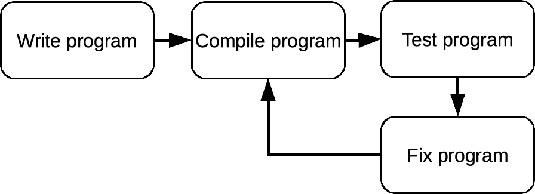
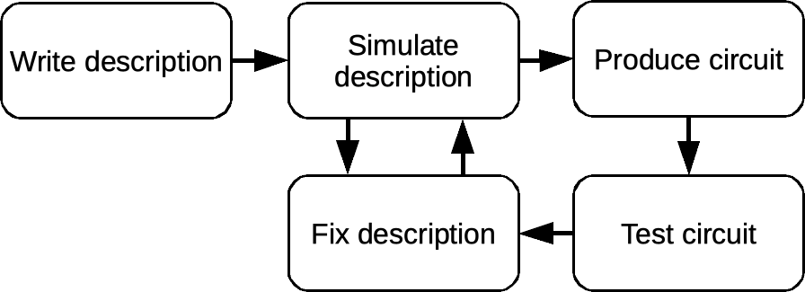
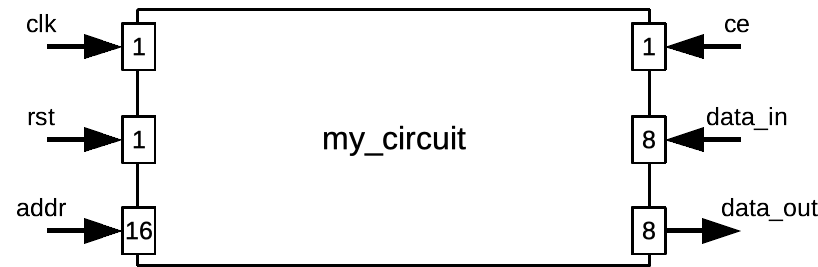
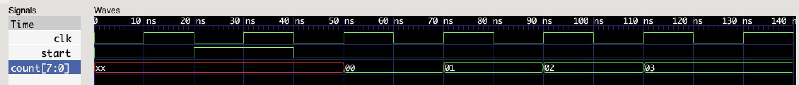
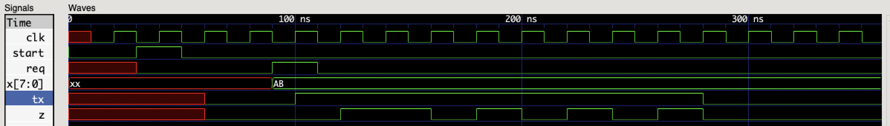
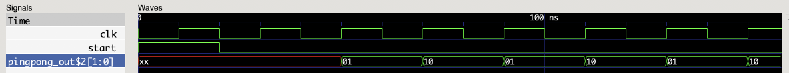
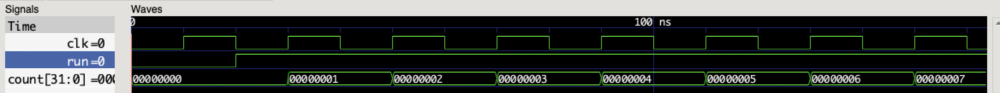
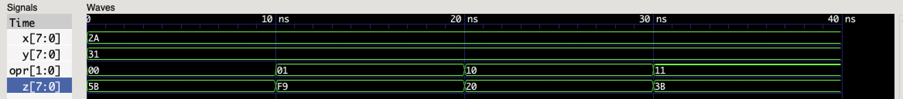
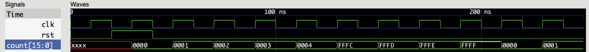

In this tutorial, you will learn the basics about the description of digital circuits using HDLRuby from the software point of view. In detail you will learn:
Then, the following section will introduce advanced concepts about hardware design and HDLRuby:
Within these topics, you will also have an explanation of how the following high-level concepts can be used in HDLRuby:
Object-oriented programming
Reflection
Genericity
Metaprogramming
But, before going further, here are a few...
Since this tutorial is aimed at software people, it is assumed you have a good understanding of programming and the relevant tools (e.g., editor, compiler). However, it is not assumed that you have any knowledge about digital hardware design. Otherwise, knowing the Ruby programming language is recommended but not mandatory.
To use HDLRuby the following software is required:
A distribution of the Ruby language.
A text editor. If you like syntax highlighting or other fancy features, please choose one supporting Ruby.
A command line interface (e.g., command prompt, terminal emulator.)
The following software is also recommended:
HDLRuby is a hardware description language (HDL) based on the Ruby programming language. It is implemented as a Ruby library so that, by construction, any Ruby code can be used and executed within the HDLRuby description.
Before going further, let us briefly explain what is a HDL. Then, more details will be given about how to install HDLRuby and how to use it.
A hardware description language (HDL) is a formal language that is used for describing electronic circuits. Such circuits can be divided into two categories: analog circuits and digital circuits. While there exists HDL for describing the first category of circuits, a large majority of them only support the second one. Hence, in practice, HDL usually means language for describing digital circuits only. Among the multiple HDL, two became de-facto standards: Verilog HDL and VHDL.
Nowadays, there exist powerful software tools that can automatically produce circuits from HDL descriptions. However, like in software, there may be errors in the descriptions, or they may be sub-optimal, so that the final circuit does not work, or does not meet some constraints. Unfortunately, in hardware, producing a circuit is very time-consuming and expensive so contrary to software, errors or low-performance results must be avoided as early as possible. This is why it is common in hardware to simulate your circuit description before starting to produce it. In other words, while in software it is common to perform the following loop:

In hardware, the design loop is more like as follows:

At first, an HDL has the same look and feel compared to classical programming languages like C or Java: it includes expressions, control statements, and kinds of variables. However, the underlying model of computation is quite different, especially because circuits are inherently parallel devices. This will be explained progressively during this tutorial, but for now, it is enough to remember the following:
HDL are used for describing digital circuits and the most common ones are Verilog HDL and VHDL.
Using software tools called synthesis tools, you can produce real digital circuits from HDL description. But before that, you will need to simulate your description.
An HDL looks like a common programming language but does not work the same.
Well, HDLRuby is an HDL for describing digital circuits like Verilog HDL or VHDL but aims at being more flexible and productive than them by relying on many concepts inherited from the Ruby programming language. So everything said earlier about HDL applies to HDLRuby, but we try to make it much easier for the designers. Furthermore, HDLRuby includes constructs for describing and simulating software modules so that you can design a full hardware-software device using the same framework (there is a fancy word for that: hardware-software co-design).
HDLRuby is distributed as a RubyGems package. It can therefore be installed using the following command:
gem install HDLRuby
If everything is OK, the following should be displayed:
Fetching HDLRuby-<version>.gem
Building native extensions. This could take a while...
Successfully installed HDLRuby-<version>
Parsing documentation for HDLRuby-<version>
Done installing documentation for HDLRuby after <x> seconds.
The version number should be the latest version of HDLRuby.
You can then check if HDLRuby is properly installed by using the following command:
hdrcc --version
And the result should be:
<version>
If the resulting version number does not match the install number, there may have been a problem somewhere. It may be a good idea to close the terminal or command prompt and try again the command in a new one.
Up to now, we said that HDLRuby is a language, it is in truth a complete framework for designing and simulating digital circuits. It includes several compilers, simulators, and libraries that are all accessible through a single command: hdrcc.
Basically, hdrcc is used as follows:
hdrcc <options> <input file> <output/working directory>
Where options specifies the action to be performed, input file specifies the input HDLRuby file, and output/working directory specifies the directory where the command results will be saved. As a general rule, when an input file is specified, an output directory must also be specified.
Several actions are possible using hdrcc, the main ones being the following:
hdrcc --sim <input file> <output directory>
hdrcc --svg <input file> <output directory>
* Generate the equivalent Verilog HDL code:
```bash
hdrcc --verilog <input file> <output directory>
This second action is necessary if you want to produce a real circuit since HDLRuby is not yet supported by synthesis tools.
Note: VHDL generation is also possible using the following command.
hdrcc --vhdl <input file> <output directory>
While being able to convert HDLRuby to Verilog HDL may usually be enough to design a cricuits, it may also sometimes be useful to be able to do the reverse: converting a Verilog HDL file to HDLRuby. To do this, you can use the following command:
v2hdr <input Verilog HDL file> <output HDLRuby file>
For example, assuming that you have a Verilog ddHDL named 'adder.v' describing and adder circuit, you can convert it to HDLRuby as follows:
v2hdr adder.v adder.rb
It is also possible to directly use a Verilog file as input to 'hdrcc', but its top module must be specified. For example, to directly simulate the previous 'adder.v', and assuming its top module is 'adder' you can do as follows:
hdrcc --sim -t adder adder.v adder
Note: for the command above, it is assumed that 'adder.v' contains a simulation benchmark.
And that's it! For details about all the actions that can be performed, how to write an input file, and what kind of output can be produced, let us see the remaining of the tutorial.
The HDLRuby files, that include HDLRuby description of circuits, are text files (the default encoding is UTF-8), is file name's extension is by convension .rb. It is possible to include other HDLRuby file within the current one using the require (for HDLRuby standard files) or require_relative (for local HDLRuby files) methods as follows:
require "filename"
require_relative "path_to_another_filename"
As it will be seen later, software Ruby code can also be used for generic descriptions of circuits. It is also possible to include Ruby code from different files using respectively require_ruby for standard libraries and gems, and require_relative_ruby for local files.
In this section we will see:
In HDLRuby as well as in other HDL, a circuit is viewed as a box that communicates with its environment with ports. The following charts illustrate such a view with a circuit including 5 ports:
Ports are not simple entry points though, because they also have a data type and a direction that can be one of the following:
input: such a port can be used for transmitting data from the outside of the circuit to its inside.
output: such a port can only be used for transmitting data from the inside of the circuit to its outside.
inout: such a port can only be used both as an input port and as an output port. Due to physical limitations, these ports are difficult to use though, and will therefore be ignored until the advance part of this tutorial.
With that in mind, declaring a circuit consists of specifying its name and its ports. In HDLRuby this is done as follows:
system :my_circuit do
input :clk, :rst
[16].input :addr
input :ce
[8].input :data_in
[8].output :data_out
end
So please write the code above in a file called (for example) my_circuit.rb, and let us explain its meaning.
In the first line, the keyword system indicates a new circuit will be described. Its name is given after the colon, my_circuit here.
The do → end block contains the description of the circuit. Here, only the ports are specified as follows:
On the second line, input specifies two one-bit input ports named respectively clk and rst.
The third line specifies a 16-bit input port named addr.
The fourth line specifies a one-bit input port named ce.
The fifth line specifies an eight-bit input port named data_in.
The sixth line specifies an 8-bit output port named data_out.
And here is a diagram of this circuit:

To sum up things:
system declares a new circuit description.
input specifies one or several input ports, output one or several output ports, and inout one or several input-output ports.
The data type of the port is given before the direction as follows:
<type>.input <list of ports names>
We will give later more details about data types in HDLRuby.
Now let us see if your circuit description is all right with the following command:
hdrcc my_circuit.rb work
...Nothing happened? Great, that means that there was no syntax error in your description. Now let us try something else:
hdrcc --hdr my_circuit.rb work
If everything was OK, a file named my_circuit.rb should have appeared in the work directory. Open it with a text editor, its content should be the following:
system :"__:T:0:1" do
bit. input :clk
bit.input :rst
bit[15..0].input :addr
bit.input :ce
bit[7..0].input :data_in
bit[7..0].output :data_out
end
It looks somewhat similar to the code you have just written. This is because it is the internal representation (IR) of your circuit in HDLRuby. You can see that the name of the circuit changed to some weird character string and that the data types also changed. The weird string is for avoiding name clashes, so you do not need to be concerned about it. The data types are low-level representations of the same data types that were used in the initial file. Still, this low-level representation is very close to the original one, but that will be less and less the case as the features are added to the circuit.
Now, out of curiosity, how will look the equivalent Verilog HDL code? To check that just type the following command:
hdrcc --verilog my_circuit.rb work
If everything was OK, a file named my_circuit.v should have appeared in the work directory. Open it with a text editor, its content should be the following:
`timescale 1ps/1ps
module _v0_1( clk, rst, addr, data_in, data_out );
input clk;
input rst;
input [15:0] addr;
input ce;
input [7:0] data_in;
output [7:0] data_out;
endmodule
The syntax looks indeed a little bit different from HDLRuby, but you should be able to recognize the description of the circuit. The name of the module is different though, this is because HDLRuby supports any Unicode character for names and to avoid compatibility problems, it recreates the names when generating Verilog. But, just for the fun, please replace :addr in the HDLRuby file with :☺ and regenerate Verilog HDL from it... It works! And the result is:
`timescale 1ps/1ps
module _v0_1( clk, rst, _v1_, data_in, data_out );
input clk;
input rst;
input [15:0] _v1_;
input ce;
input [7:0] data_in;
output [7:0] data_out;
endmodule
Unfortunately, there is no more smiling face. This is because Verilog HDL only supports a subset of ASCII for names. But even without smiling, the code is valid because the HDLRuby framework did recreate Verilog HDL-friendly names.
Like with functions in software, a circuit is often used as part of one or several larger circuits. Contrary to the software, however, the circuit must be physically copied to be reused. This copy is called an instance and the act of copying an instantiation. In HDLRuby, an instantiation is done as follows:
<circuit name>(:<copy name>)
For example, if you want to use copies of the previously defined circuit my_circuit in a new circuit called another_circuit you can do as follows:
system :another_circuit do
input :clk, :rst
[16].input :addr
input :ce0, :ce1
[8].input :data_in
[8].output :data_out
my_circuit(:my_circuit0)
my_circuit(:my_circuit1)
end
For testing purposes, write the code above into another file called another_circuit.rb, and try to generate Verilog HDL from it:
hdrcc --verilog another_circuit.rb work
Oh, it appears that something went wrong since the following should have appeared:
another_circuit.rb:8:in `block in <main>': undefined HDLRuby construct, local variable or method `my_circuit'.
This error message indicates that my_circuit is not known. This is because, like the Ruby language, in HDLRuby you must specify the files you are using. Please add as the first line in your another_circuit.rb file the following code:
require_relative "my_circuit.rb"
Then retry the Verilog HDL generation command:
hdrcc --verilog another_circuit.rb work
Three new files should have appeared in the work directory: _v10_5.v, _v8_4.v and another_circuit.v. If you open the third file you should see:
`timescale 1ps/1ps
module _v0_3( clk, rst, addr, ce0, ce1, data_in, data_out );
input clk;
input rst;
input [15:0] addr;
input ce0;
input ce1;
input [7:0] data_in;
output [7:0] data_out;
_v8_4 my_circuit0();
_v10_5 my_circuit1();
endmodule
Again, we can see similarities between the resulting Verilog HDL code and the original HDLRuby one. Still, what are _v8_4 and _v10_5? You can see them by opening the corresponding files _v8_4.rb and _v10_5.rb, those are the descriptions of my_circuit in Verilog HDL.
But why two of them? I would like to answer that this is because of a limitation of Verilog HDL, but this is not the case. It is because HDLRuby's instantiation mechanism is very different from the Verilog HDL (and the VHDL) one, so for the moment, and only for easing the coding work of the HDLRuby compiler, one description of
my_circuitis generated per instance.
Copying a circuit is easy, but it achieves no purpose if the copied circuit is not in a relationship with its environment. It is where the ports become useful: they are the communication points between a circuit and its outside world. Concretely, to interact with a circuit, its ports must be connected to something that will interact with them. How this interaction works is a story for the other sections of this tutorial. For now, let us focus on connections: in HDLRuby this is done using the assignment operator <= as follows:
<something> <= <input port>
<output port> <= <something>
Many things can be connected to a port, but right now, we only know about ports, so let us do the connection in another_circuit with them. So here is the new code of another_circuit.rb, please modify the file accordingly:
require_relative "my_circuit.rb"
system :another_circuit do
input :clk, :rst
[16].input :addr
input :ce0, :ce1
[8].input :data_in
[8].output :data_out
my_circuit(:my_circuit0)
my_circuit(:my_circuit1)
my_circuit0.clk <= clk
my_circuit0.rst <= rst
my_circuit0.addr <= addr
my_circuit0.ce <= ce0
my_circuit0.data_in <= data_in
my_circuit1.clk <= clk
my_circuit1.rst <= rst
my_circuit1.addr <= addr
my_circuit1.ce <= ce1
my_circuit1.data_in <= data_in
end
If you are familiar with object-oriented or structured software programming, this code should be straightforward: the dot . operator is used to access a sub-element and in this case the ports of my_circuit0 and my_circuit1. For example, the first connection line (line 10) connects the clk port of another_circuit to the one of my_circuit0, so that any data that goes through the former port will also go through the latter.
Now, the data_out ports are still not connected. It may be tempting to connect them like data_in as follows:
data_out <= circuit0.data_out
data_out <= circuit1.data_out
This will work indeed, but not the way you may think: in hardware, you cannot normally connect to one port several different objects. It is like assigning several values at the same time to a single variable. What will happen in HDLRuby, is that only the last statement will be kept, i.e., port data_out of circuit0 will not be connected.
With such kind of cases, what we often want to do is to connect to data_out some computation result between the output of circuit0 and circuit1. This is the opportunity to see another kind of construct that can be connected to a port: an expression. Like in software, an expression represents an arithmetic and logic computation. For example, let us consider the following connection:
data_out <= my_circuit0.data_out + my_circuit1.data_out
With this connection, the sum of the outputs my_circuit0 and my_circuit1 is transmitted through the output port data_out of another_circuit.
But when is this computation performed? This is a very good question: while in software, programs are executed one instruction after the other, in hardware, there is no such thing as the execution of instructions. The expression connected to
data_outis not an instruction at all! It is a description of a part of the circuit that specifies that an adder (a circuit that does addition) must be instantiated with the output portsdata_outofmy_circuit0andmy_circuit1connected to its inputs and its output connected to the output portdata_outofanother_circuit. The following figures show the schematic of this hardware portion:

So, when this expression is executed? It is continuously executed, i.e., as soon as one of the outputs
data_outofmy_circuit0ormy_circuit1changes, so does the outputdata_outofanother_circuit.
For trying this new circuit, please update the code of another_circuit.rb as follows:
require_relative "my_circuit.rb"
system :another_circuit do
input :clk, :rst
[16].input :addr
input :ce0, :ce1
[8].input :data_in
[8].output :data_out
my_circuit(:my_circuit0)
my_circuit(:my_circuit1)
my_circuit0.clk <= clk
my_circuit0.rst <= rst
my_circuit0.addr <= addr
my_circuit0.ce <= ce0
my_circuit0.data_in <= data_in
my_circuit1.clk <= clk
my_circuit1.rst <= rst
my_circuit1.addr <= addr
my_circuit1.ce <= ce1
my_circuit1.data_in <= data_in
data_out <= my_circuit0.data_out + my_circuit1.data_out
end
Then, let us generate again Verilog HDL from it:
hdrcc --verilog another_circuit.rb work
Oh! If you get the following error message:
another_circuit.rb:15:in `block in <main>': undefined method `addr' for #<HDLRuby::High::Namespace:<whatever number>>
Do not forget to replace the smiling face with addr in my_circuit.rb.
When the compile succeeds (no error message), two new files appear in work, namely _v20_4.v and _v23_5.v. Those are the new descriptions of my_circuit, they did not change, but since new hardware has been added their name changed. For the interesting part, let us open again another_circuit.v, the result should be as follows:
`timescale 1ps/1ps
module _v0_3( clk, rst, addr, ce0, ce1, data_in, data_out );
input _v1_clk;
input _v2_rst;
input [15:0] addr;
input ce0;
input ce1;
input [7:0] data_in;
output [7:0] data_out;
wire _v8_0;
wire _v9_1;
wire [15:0] _v10_2;
wire _v11_3;
wire [7:0] _v12_4;
wire _v13_5;
wire _v14_6;
wire [15:0] _v15_7;
wire _v16_8;
wire [7:0] _v17_9;
wire [7:0] _v18_10;
wire [7:0] _v19_11;
_v20_4 my_circuit0(.clk(_v8_0),.rst(_v9_1),.addr(_v10_2),.ce(_v11_3),.data_in(_v12_4),.data_out(_v18_10));
_v23_5 my_circuit1(.clk(_v13_5),.rst(_v14_6),.addr(_v15_7),.ce(_v16_8),.data_in(_v17_9),.data_out(_v19_11));
assign _v8_0 = clk;
assign _v9_1 = rst;
assign _v10_2 = addr;
assign _v11_3 = ce0;
assign _v12_4 = data_in;
assign _v13_5 = clk;
assign _v14_6 = rst;
assign _v15_7 = addr;
assign _v16_8 = ce1;
assign _v17_9 = data_in;
assign data_out = (_v18_10 + _v19_11);
endmodule
The code is starting to get complicated and seems to be much different from the HDLRuby description than before. This is because this time, real syntactic limitations of Verilog HDL compared to HDLRuby have to be bypassed. Here, the limitation is that while in HDLRuby, ports can be connected wherever we want, in Verilog HDL, this must be done only while instantiating.
In fact, in HDLRuby too you can do the connection while instantiating, this is even recommended for better readability of the code. There are two ways to do so: by position (like for the arguments of a function call) or by name. Let us see both by editing again another_circuit.rb: please just replace both instantiation lines with the following:
my_circuit(:my_circuit0).(clk,rst,addr,ce0,data_in,data_out)
my_circuit(:my_circuit1).(clk: clk, rst: rst, addr: addr, ce: ce1,
data_in: data_in, data_out: data_out)
The instantiation for my_circuit0 does the connection by position, that is to say, that each port given between the second parenthesis is connected in the order of declaration of in ports of my_circuit.rb. For my_circuit1P the connection is done by name: then syntax <name>: <something> connects ports named name of the instance of my_circuit to something. For example clk: clk connects port clk of my_circuit0 to port clk of another_circuit.
Now you know:
How to declare a new circuit with its name and ports in HDLRuby.
How to check it with hdrcc.
How to convert it to Verilog HDL.
How to reuse it into another circuit.
And even, how to describe the computation of some expressions and connect them to an output port.
But you still do not know: how to describe more complex computations, e.g., controls, and how to simulate a circuit. Let us start slowly (from the software person's point of view) with how to describe an algorithm the simple way in HDLRuby.
In this section we will see:
In software, handling values looks straightforward enough: they are computed with expressions and stored in variables. In hardware it is slightly different since two kinds of components handle values: the wires and the storage components:
The wires are abstractions of physical wires or sets of wires that transmit data to the hardware component they are connected to. A wire cannot hold a value: if a component drives a value to a wire, this wire takes this value, and it will last as soon as this drive stops.
The storage components are abstractions of registers or memories that can hold values. Depending on how they are described, the value they hold can be changed on specific events like the rising edge of a clock. Hence, the storage components are closer to the software variable than the wires are.
With HDL like Verilog HDL, there is a real distinction between wires and storage components. However, with other HDL like VHDL, or here with HDLRuby, both are abstracted by a single concept: the signal. Specifically, when a signal is only driven on a given event, it becomes a storage element, otherwise, it will remain a wire.
Note: one may ask what about the variable construct in VHDL: those are syntactic intermediates used for simplifying the descriptions. HDLRuby also supports such a variable construct, but those are simply the variables of the Ruby language. Therefore, these variables can hold not only values but any Ruby or HDLRuby constructs.
In HDLRuby, there are four kinds of signals: the input ports, the output ports, the inout ports, and the inner signals. The first three kinds of signals have already been described in the section about declaring a circuit. At that time they were called ports because it is what such constructs are called in common HDL. However, in HDLRuby there is no distinction at all between ports and signals, hence from now on, we will use the term signal in general, and the term port when we only want to refer to the interface of a circuit. The inner signals can be used inside a circuit and are usually used as an intermediate for internal computations. They are declared like the ports, but using inner instead of input, output, or inout. For example, the following code declares a module named a_circuit with two 1-bit inputs, one 8-bit output, and one 4-bit inner signal.
system(:a_circuit) do
input :u, :v
[8].output :z
[4].inner :sig
end
Note: the inner signals as well as the ports can be declared anywhere within the body of a module. It is however recommended to declare the ports at the beginning, and the inner signal when relevant, e.g., it may not be a good idea to declare an inner signal at the beginning of a circuit description if it is only used at the end.
For now, we only used positive integer values, e.g., [8].inner declares an 8-bit positive integer. To tell the truth, [8] is not the designation of the 8-bit positive integer data type, but a syntactic sugar that stands for: bit[8]. As a general rule, in HDLRuby, the designation of a data type is as follows:
<base>[<range>]
Where base is another data type and range describes the range of indexes used for accessing its elements individually. In addition, there are three root data types used for building all the other ones:
bit: for boolean or 1-bit unsigned values, i.e., the only possible values are 0 and 1.
signed: for 1-bit signed values in 2's complement, i.e., the only possible values are 0 and -1.
float: for 1-bit floating point values, but, WARNING: this data type is not supported yet!
For example, a 32-bit input signed integer signal and an inner array of eight 24-bit integers are declared respectively as follows:
signed[32].input :sig
bit[24][8].inner :ar
Unfortunately, the following is not valid:
[24][8].inner :ar
This is because it conflicts with other constructs in the language.
When the code above is declared, you can access one element of array ar using the brackets like before, e.g., its first element is ar[0], its second one ar[1], and so on. But you can also access its last element as follows: ar[-1], its element before the last one as follows ar[-2], and so on. Moreover, since an integer is just an array of bits, it is possible to access its bits individually in the same way. For example, accessing the first bit of the last element of ar can be done as follows: ar[-1][0].
But compared to the software you can do even more than that: you can also access to sub-range of elements of a signal. For example, assigning bits from index 4 to 27 of signal sig to element 1 of array ar can be written as follows using range:
ar[1] <= sig[27..4]
A range is noted as follows: <start value>..<end value>, and indicates respectively the value of the first and the last indexes. Convenient, is not it? But wait... Why 27..4 and not 4..27?
If you are familiar with hardware or with low-level software, you may be aware of this topic. There are two possible ways for reading a value or the content of an array: from the most significant bit or index to the least significant one (big-endian) and the opposite (little-endian). Since big-endian is more natural for reading numbers it is the default mode in HDL, including HDLRuby. However, for an array, software programming usually does the opposite. In HDLRuby, using little-endian instead of big-endian is declared by using a negative number for the size instead of a positive one.
As a general rule, code will be much easier to understand if integer values are big-endian and the array accesses little-endian. That is to say that the following declaration is the best for ar:
bit[24][-8].inner :ar
One last thing: it is also possible to set the numbering of each bit of a signal using again a range instead of an integer indicating the size. For example, with the following declaration,
ais an 8-bit big-endian integer with its bits numbered from 0 to 7, andbis a 9-bit little-endian integer with its bits numbered from 1 to 9:
[7..0].inner :a
[1..9].inner :b
So now you know about basic types in HDLRuby, but what happens when we make operations between signals of different types?
First, you can convert the type of a signal using the cast operator as. For example, in the following code, the result of a 16-bit unsigned addition is performed between the 8-bit signal x converted to 16-bit and the 16-bit signal y:
[8].inner :x
[16].inner :y, :z
<some code>
z <= x.as(bit[16]) + y
However, if you do not use the cast operator, HDLRuby will do it automatically for you and cast the operands to the largest of their types. That is to say that for the following code the result is identical to the previous one:
[8].inner :x
[16].inner :y, :z
<some code>
z <= x + y
This rule means that for the following code, z will have the result of an 8-bit addition since both operands x and y are 8-bit:
[8].inner :x, :y
[16].inner :z
<some code>
z <= x + y
If you want a 16-bit addition, you must add a cast to at least one of the operands, e.g.:
[8].inner :x, :y
[16].inner :z
<some code>
z <= x.as(bit[16]) + y
These explanations about data types may have been not so fun, be we should better get over with them first so that now we can start the real fun with actual "programming"...
Note: "Programming" is put between quotes because this is not programming since there is no program, but instead, a description of a physical circuit.
So now you know how to declare a circuit, use it, connect it, and declare variable-like constructs that are called signals. We will see later that signals are definitive not software variables, but let us go on with the illusion for a little while and see how you can describe an algorithm in HDLRuby. As a side note, the features described in this section are unique to HDLRuby so do not expect to be able to do the same with Verilog HDL or VHDL.
With software languages, when you want to describe an algorithm you use assignments but also control statements like if, for, or while. If you know higher-level languages like Java or Ruby you may also use design patterns like iterators (or enumerators). You can do the same in HDLRuby with constructs called sequencers. At first glance, a sequencer can be seen as the description of a hardware component implementing a software algorithm. Hence, a sequencer may look like a processor, but there are differences:
It is not possible to change the algorithm implemented by a sequencer (you cannot "load" a new program).
A sequencer starts execution according to a given start signal, and from there advances execution at each cycle of a given clock.
You have control of the algorithm at the clock cycle level, and incidentally, a sequencer is much more efficient than a processor executing a program.
This section will explain the following about sequencers:
As said in the previous section, a sequencer advances execution according to a clock and starts execution according to a start signal. A clock is a single-bit signal that alternates from 0 to 1, and it is the transition from 0 to 1, or from 1 to 0 of this signal that will make a sequencer progress execution. Let us see two examples of sequencers to understand better:
system :the_counter do
inner :clk, :start
sequencer(clk,start) do
end
end
In the code above, a module containing one sequencer is described. The sequencer is controlled by the start signal start and clock signal clk, which means that:
it will advance execution every time clk switches from 0 to 1 - we call such an event a positive edge of clk;
it will start when signal start switches from 1 to 0 - we call such an event a negative edge of start.
Why a positive edge for clk and a negative one for start? It does not matter much, and you can specify the edges you want using the posedge and negedge methods. For example, the following sequencer advances execution on a negative edge of clk and starts on a positive edge of start:
sequencer(clk.negedge,start.posedge) { }
Note: the curly brackets used here are equivalent to the do and end keywords we used until now.
WARNING: there is a caveat though, since a sequencer advances execution according to a clock signal, it will not be able to start properly unless the start signal is strictly slower than the clock.
But now, what will this sequencer do? ... Nothing right now since its body is empty. So let us start small and make it count the number of a few clock cycles:
system :the_counter do
inner :clk, :start
[8].inner :count
sequencer(clk,start) do
count <= 0
step
count <= count + 1
step
count <= count + 1
step
count <= count + 1
end
end
The first line of the body of the counter looks like the connection of ports we described previously. However, it is inside the body of a sequencer and will therefore be executed by it, that is to say, before this statement is executed, count may not be 0. More generally:
Every assignment statement outside sequencers (and later processes) is a connection: the signal will always and continuously have the value that is assigned to it.
The other assignment statements, e.g., the ones inside a sequencer, are called transmission in HDLRuby and happen only when "executed."
In our example, the count is set to 0 when the sequencer starts execution. But before that, no one knows the value of count: it is said to be undefined.
Just after this initial line, there is the step keyword. There we go from the software world to the hardware one: this keyword indicates that the sequencer ends execution here until the next clock cycle. Looking at the subsequent line you may understand why we waited: this line increases the value of count by one, i.e., the sequencer counted one clock cycle. Again, a step is inserted, and count is increased, and so on, so that this is indeed the code of a sequencer that counts the clock cycles. However the code ends after 3 clock cycles, and like with software, when the code of a sequencer is over, it stops execution.
This may look abstract, so let us try to simulate this circuit. For that purpose, write the code into a file named the_counter.rb (for example) and try the following command that will simulate the circuit:
hdrcc --sim the_counter.rb the_counter
If everything was all right the following text will appear:
__:T:0:::2: 000
It indicates that a signal named __: T:0:::2 has been initialized to 0 (000), and that's all... Why is that, and why only that? First, this signal with a strange name has been generated by HDLRuby for the internal processing of the sequencer and is required to be initialized to 0. So, ok, the simulation did some initialization, but it did not seem to do any execution. This is because we did not give any description of the physical environment of the circuit, and especially, we did not say that the clock and the start signal need to change value. For describing the behavior of the environment of a circuit, we use a construct called, in HDLRuby, the timed process. They are somewhat close to sequencers but are not controlled by a clock signal but by physical time. So let us add the following code just after the sequencer (but still inside the module the_counter:
timed do
clk <= 0
start <= 0
!10.ns
clk <= 1
!10.ns
clk <= 0
start <= 1
!10.ns
clk <= 1
!10.ns
clk <= 0
start <= 0
!10.ns
clk <= 1
!10.ns
clk <= 0
!10.ns
clk <= 1
!10.ns
clk <= 0
!10.ns
clk <= 1
!10.ns
clk <= 0
!10.ns
clk <= 1
!10.ns
clk <= 0
!10.ns
clk <= 1
!10.ns
end
Sorry, this code is a little bit long... Did you add it to the file the_counter.rb? now please try again the simulation command:
hdrcc --sim the_counter.rb the_counter
You should have the following result:
__:T:0:::2: 000
__:T:0::clk: 0
__:T:0::start: 0
# 10000ps
__:T:0::clk: 1
__:T:0:::1: 000
# 20000ps
__:T:0::clk: 0
__:T:0::start: 1
# 30000ps
__:T:0::clk: 1
__:T:0:::2: 001
# 40000ps
__:T:0::start: 0
__:T:0::clk: 0
# 50000ps
__:T:0::clk: 1
__:T:0:::1: 001
__:T:0::count: 00000000
__:T:0:::2: 010
# 60000ps
__:T:0::clk: 0
# 70000ps
__:T:0::clk: 1
__:T:0:::1: 010
__:T:0::count: 00000001
__:T:0:::2: 011
# 80000ps
__:T:0::clk: 0
# 90000ps
__:T:0::clk: 1
__:T:0:::1: 011
__:T:0::count: 00000010
__:T:0:::2: 100
# 100000ps
__:T:0::clk: 0
# 110000ps
__:T:0::clk: 1
__:T:0:::1: 100
__:T:0::count: 00000011
__:T:0:::2: 101
# 120000ps
__:T:0::clk: 0
# 130000ps
__:T:0::clk: 1
__:T:0:::1: 101
__:T:0:::2: 000
# 140000ps
If you look at the last line of the simulation result you should have # 140000ps, which means that final the simulation time was 140000 picoseconds (140 nanoseconds). If you look at the result in totality, you will see an alternation of signal names followed by a value in binary (e.g., __:T:0::clk: 1 means that the clk signal is 1) and an indication of the time of the simulation. The names look indeed messy, but please only focus on their last parts: that will be the names of the signals you defined in your HDLRuby file. You will also notice some signals that you did not declare (e.g., __:T:0:::1 and __:T:0:::2, but those are only signals generated by HDLRuby.
Now, let us see what happened, and what was the meaning of the timed construct we added. As explained before, timed constructs are like sequencers, but controlled by physical time instead of a clock signal. Inside, you can put assignments but also statements that advance the time. For instance: !10.ns is a statement that advances time by 10 nanoseconds (i.e., 10000 picoseconds). Hence, with such a construct you can declare that a signal will take a given value at a given time. For this example, it is enough to tell how the clk and start signal change over time to make the sequencer run by itself. Hence, the clk signal is made to switch from 0 to 1 then from 1 to 0 every 10 nanoseconds, which simulates a 50 MHz clock, and the start signal is set to 1 and then to 0 so that the sequencer starts execution. The first thing it does is set counter to 0, and then the following cycles this counter is increased until its execution completes. Even when the sequencer completes execution, the simulation goes on though, until the timed process also completes.
WARNING: in HDLRuby, everything is synthesizable, i.e., it can be turned into a real circuit, apart from the timed processes. These constructs are only there for simulating the physical environment of a circuit.
Indeed, the text output of the simulator is hard to read, and therefore we highly recommend generating a graphical one using the following command:
hdrcc --sim --vcd the_counter.rb the_counter
The new option --vcd makes the simulator produce a Value Change Dump file (VCD) that can be visualized graphically by many HW design tools. If you do not have any such tool you can get GTKWave which is under GNU General Public License v2.0, or HTMLWave by the author of HDLRuby (link of interest!) and which is under the MIT License (also available as web application at this link.)
The resulting vcd file can be found in the the_counter directory with the name hruby_simulator.vcd. If you open it and select the clk, start, and counter signals you will see something like the following picture:

Such a graph is called a time chart and displays the evolution of signals with time on the X-axis. You can see that clk is indeed alternating from 0 to 1, and that start is set to 1 for one clock cycle only. After this later signal becomes 0 again, the sequencer starts. This can be verified by looking at the value of counter: at first, it is undefined, that it is set to 0, then increased by 1 at each clock cycle until it reaches 3.
So now, you know:
How to describe an algorithm in HDLRuby.
How to simulate it.
How to display a cool graph showing the simulation results (maybe?)
Hum, the algorithm part is quite limited, and the timed processes seem to be real pains to write. So let us see how to do better in the following section.
Now, when we speak about algorithms, we often think about software constructs like if for conditional executions and for for loops. Unfortunately, in HW design this is usually not that simple at all... But for the HDLRuby sequencers, it is indeed that simple: all these control statements are supported without any limitation. The only thing you have to be careful about is their name: to avoid confusion with the Ruby language, their names are all prefixed with an s (for sequencer), e.g., you have to use sif for doing an if.
In detail here is a list of the control statements you can use within a sequencer:
sif(<condition>) <block>: executes block if condition is true (i.e., different from 0).
selsif(<condition>) <block>: executes block if the previous sif and selsif conditions are false and if the current condition is true.
selse <block>: executes block if the conditions of the previous sif and selsif are false (i.e., equals 0). It is also used for giving the default block for the scase statements (see below).
scase(<choice>): initializes a multiple case statement.
swhen(<value>) <block>: executes block if value is equal to the choice of the previous scase statement.
sloop <block>: loops infinitely repeating the execution of block (yes, like Ruby, if you want to do an infinite loop, do it explicitly, not with constructs like while(true)... even if you can).
swhile(<condition>) <block>: repeats the execution of block as long as condition is true.
sfor(<enumerable>) <block>: executes block on each element of enumerable .
sbreak: ends the current loop (even if it is a sloop).
scontinue: ends the current iteration.
steps(<num>): performs num times step (num can be any expression). Useful for waiting a certain number of cycles.
IMPORTANT: each control statement requires one clock cycle for each branch they perform, independently of what their block contains. For example, in the following code, the value of
ywill be set one cycle afterxis set to 0, and one cycle beforezis set to 1.
x <= 0
sif(~x) { y <= 2 }
z <= 1
Let us see the details about these constructs with a few examples. First, let us make a circuit that computes the factorial of an input value when asked for:
system :fact do
input :clk, :start, :req
[5].input :data_in
output :ack
[32].output :data_out
[4].inner :val
[24].inner :res
sequencer(clk,start) do
sloop do
ack <= 0
swhile(req != 1)
val <= data_in
res <= 1
swhile(val>1) do
res <= res*val
val <= val - 1
end
data_out <= res
ack <= 1
end
end
end
The code is more complex than what we have seen up to now, so let us study it progressively:
The circuit is named fact (for factorial).
It has four inputs:
clk and start: the signals that control the execution of the sequencer (nothing new here).
req: the signal that will ask for a factorial computation (req stands for require).
data_in: the signal that will provide the input value. It is a 4-bit unsigned integer.
It has two outputs:
ack: the signal that will tell that the current computation of factorial is over. Such a signal is necessary for the environment to know if the output result is valid or not since the computation time of a factorial depends on the input value.
data_out: the signal that will hold the computation result. It is a 24-bit unsigned integer, much larger than the input, but we are computing factorials here! (This is not enough yet: 15! equals 1307674368000 which requires 41 bits... But 24-bit was the largest that could fit in the picture of the time chart that is shown after.)
The sequencer includes an infinite loop (sloop) so that it does not stop after one computation. Within this loop:
It first sets ack to 0 to tell that currently, its output is not valid (no computation is done yet).
Then it waits for a request, i.e., it waits for that signal req is 1. This loop (swhile(req != 1)) does not have any block to execute, it will therefore loop without doing anything.
When req becomes 1, it loads the input value into an internal temporary signal (val) and initializes the computed value (res) to one.
Finally, it loops by multiplying res by val and decreasing val until 1 is reached before assigning the computation result to data_out and setting ack to 1 for telling the computation is over.
Now let us simulate this circuit. For that, you now know that we must describe the environment using a timed process. But this time, let us do this properly by putting the description of the environment in a different module to separate the circuit description from the simulation: please write in a file named fact.rb the code of module fact, and then the following code:
system :fact_bench do
inner :clk, :start, :req, :ack
[4].inner :x
[24].inner :z
fact(:factI).(clk,start,req,x,ack,z)
def clk!
clk <= 0
!10.ns
clk <= 1
!10.ns
end
timed do
start <= 0
!10.ns
clk!
start <= 1
req <= 0
clk!
start <= 0
repeat(2) do
clk!
end
req <= 1
x <= 10
clk!
req <= 0
repeat(20) do
clk!
end
end
end
This module introduces the repeat construct. It can be used within a timed process only and has the following syntax:
repeat(<number>) <block>
It executes the block number times with the number of iterations as an argument.
WARNING: the repeat construct cannot be used outside a timed process. Inside a sequencer, you can use instead swhile or sfor.
There seems to be another new kind of command in the timed process:
clk!. This is not a command though, but it is a Ruby function defined just before with thedefblock. If you are not familiar with Ruby,defis used for defining a new function (actually a method), also, it is not necessary to put parenthesis when calling a function. Hence,clk!is simply the call of this previously defined function (in Ruby, function names can terminate with characters like!or?). If you look at the body of this function, you will see not plain Ruby code, but again HDLRuby code:
clk <= 0
!10.ns
clk <= 1
!10.ns
IMPORTANT: as said when presenting HDLRuby, this language is implemented on top of the Ruby language, and is fully compatible with it. For instance, you can write any Ruby code within HDLRuby constructs (e.g.,
def), and you can write HDLRuby code within Ruby constructs. However, there is an important difference: Ruby code is executed at compile time (i.e., when hdrcc runs) and does not produce any hardware, whereas HDLRuby code is the description of the hardware that will be produced and will be then executed either through simulation or after production physically. Then, what callingclk!does is paste the HDLRuby code in place. Here it is used to shorten the code: instead of each time setting the clock to 0, advancing time, then setting it to 1 again, writingclk!is enough to obtain the same result.
It is from this capability to mix Ruby and HDLRuby that comes the meta programmability of HDLRuby.
Finally, when you simulate with the following command:
hdrcc --sim --vcd fact.rb fact
You should obtain the following kind of resulting VCD file:

Indeed, in the factorial program, signals val and res are only used within the sequencer, so why declare them outside it? The code would be more clear if they were declared more locally, i.e., inside it, and even better, inside its main loop. So let us modify it as follows:
system :fact do
input :clk, :start, :req
[5].input :data_in
output :ack
[32].output :data_out
sequencer(clk,start) do
sloop do
[4].inner :val
[24].inner :res
ack <= 0
swhile(req != 1)
val <= data_in
res <= 1
swhile(val>1) do
res <= res*val
val <= val - 1
end
data_out <= res
ack <= 1
end
end
end
You can simulate it again, and you should obtain the same result. However, if you try to access res or val outside the main loop, then an error will be raised.
sforWith a for statement you may expect something like C with the definition of an index, its initialization, and its increment. However, the sfor of HDLRuby is simpler: it only takes as argument an enumerable object and will iterate on each of its elements. An enumerable object is any Ruby enumerable object as well as any signal. For example, the following circuit outputs bit by bit the content of a 32-bit input value:
system :serializer do
input :clk, :start, :req
[32].input :data_in
output :tx, :data_out
sequencer(clk,start) do
tx <= 0
data_out <= 0
sloop do
sif(req) do
tx <= 1
sfor(data_in) do |b|
data_out <= b
end
tx <= 0
data_out <= 0
end
end
end
end
This circuit takes as input data_in and sends its content bit by bit to data_out when req is set to 1. In detail, it first indicates the beginning of the transmission by setting tx to 1, then from the next clock cycle will send one bit of data_in per clock cycle. When the transmission is over, it sets tx to 0 again. There are a few more details to unwrap:
By default both tx and data_out are set to 0, this is done at the beginning of the sequencer but also just after the sfor.
tx is set to 1 just before the sfor loop, i.e., one cycle before the actual transmission. As said in the description of the control statements, each of them requires one clock cycle before branching.
This for loop could also have been implemented using an index as follows:
sfor(0..31) do |i|
data_out <= data_in[i]
end
However, the advantage of the first version of the code is that it is still valid when the data type of
data_inis changed whereas the second version must be rewritten to adjust the range of the index.
If you want, you can try this serializer, you need to add a module representing the environment. For example:
system :serializer_bench do
inner :clk, :start, :req, :tx
[8].inner :x
inner :z
serializer(:serializerI).(clk,start,req,x,tx,z)
def clk!
clk <= 0
!10.ns
clk <= 1
!10.ns
end
timed do
start <= 0
!10.ns
clk!
start <= 1
req <= 0
clk!
start <= 0
repeat(2) do
clk!
end
req <= 1
x <= _hAB
clk!
req <= 0
repeat(16) do
clk!
end
end
end
There is a new notation:
_hAB, this is used for representing fixed bit-width hexadecimal. Since there are two digits, it is an 8-bit value. You can also use binary representations as follows:_b10101011.
When everything is put in a file named: serializer.rb and simulated as follows:
hdrcc --sim --vcd serializer.rb serializer
You should obtain the following time chart:

Why not necessarily associated with algorithmic, it is common in software to define functions for code reuse and implementation of recursive algorithms. HDLRuby also provided such kinds of functions, with all the software features, including recursion, using the construct sdef. Such a function is defined as follows:
sdef :<name> do |<arguments>|
<body>
end
In the code above, name is the name of the function, arguments is a list of arguments and body is the code of the function that can be any kind of HDLRuby sequencer code. For returning a value from a function, the sreturn(<value>) command is used. For example, the following describes a function computing the factorial of its argument n:
sdef :fact do |n|
sif(n>1) { sreturn(n*fact(n-1) }
selse { sreturn(1) }
end
There is a lot to unpack from this small example:
Such a function can be defined outside or inside a module, but can only be called within a sequencer.
The arguments of a function, here n, do not have any defined type: their type, and consequently the final implementation of the function, is determined by the data type of the actual arguments when the function is called. For example, in the following code, the data type of the actual argument val is 16-bit unsigned, hence that will be the data type of n.
[16].inner :val, :res
sequencer do
val <= 5
res <= fact(val)
end
When a function is recursive, a stack is created to store the arguments and the sequencer states for returning at each recursion. The size of this stack is by default set to the bit width of the largest argument, e.g., for fact it is set for supporting 16 recursions. In case of stack overflow, i.e., there were too many recursive calls, the recursion is stopped, and the execution of the sequencer proceeds from just after the last call.
The behavior of the stack can be controlled in two ways when defining a function as follows:
sdef(:<name>,<size>, proc <error_handler>) do |<arguments>|
<body>
end
In the code above, size is the forced size of the stack, and error_handler is a block of code that will be executed when a stack overflow occurs. Both arguments are optional, but if the error handler is provided, then the size must also be provided. For example, the code of the factorial can be rewritten as follows to force the stack to support 64 recursions:
sdef(:fact,64) do |n|
sif(n>1) { sreturn(n*fact(n-1) }
selse { sreturn(1) }
end
It can also be defined as follows to support only 8 recursions but to set a signal named stack_overflow to 1 when a stack overflow happens:
sdef(:fact, 8, proc { stack_overflow <= 1 }) do |n|
sif(n>1) { sreturn(n*fact(n-1) }
selse { sreturn(1) }
end
Here is a full example using the factorial:
sdef(:fact,8,proc { stack_overflow_error <= 1 }) do |n|
sif(n > 1) { sreturn(n*fact(n-1)) }
selse { sreturn(1) }
end
# Checking the fact function.
system :module_with_fact do
inner :clk,:rst
[16].inner :val
[16].inner :res
inner stack_overflow_error: 0
sequencer(clk.posedge,rst) do
5.stimes do |i|
val <= i
res <= fact(val)
end
hprint("stack_overflow_error=",stack_overflow_error,"\n")
end
timed do
clk <= 0
rst <= 0
!10.ns
clk <= 1
!10.ns
clk <= 0
rst <= 1
!10.ns
clk <= 1
!10.ns
clk <= 0
rst <= 0
!10.ns
clk <= 1
repeat(500) do
!10.ns
clk <= ~clk
end
end
end
So now, you know:
Also, if you are not familiar with languages like Ruby or Python, the sfor may look great compared to what C can provide. But this is just the beginning, HDLRuby can do better than that.
If sometimes you program with Ruby, you may know about enumerators: they are objects used for processing iteratively several elements of objects. The HDLRuby's sequencer provides the same concept: it is possible to build hardware enumerators for any enumerable objects and they will run like Ruby's.
We recommend before going on with this tutorial you study the Ruby enumerable and enumerators. Indeed, since the HDLRuby enumerators and enumerable objects do reproduce the functionalities of the Ruby ones, we will only point out what is specific to the hardware.
So, enumerators iterate over enumerable, but what is it? In HDLRuby, an enumerable is either a Ruby enumerable object, an enumerator (Ruby or HDLRuby), or a signal of any type. If the signal is an array, the iteration will be over its elements, if it is a number, it will be done over its bits. For example, 0..2 is an enumerable including 0, 1, and 2 as elements, [3,6,7] is one including 3, 6, and 7, and the following signal sig includes 0, 1, 1, 0, 1, 1, 1, 0:
[8].inner sig: _b01110110
Like Ruby builds enumerators using the each method and its derivates (each_with_index and so on,) HDLRuby uses the seach method to build its enumerator. For example, an enumerator over the bits of signal sig will be built as follows: sig.seach, and if you want an enumerator with index, just like Ruby: sig.seach_with_index, and so on. Then, an enumerator can be executed when created by providing the block that will be applied on each element like in ruby, or executed later using the seach method again. For example, the following sequencer code first sums the bits of signal sig at once, then does it again later with another enumerator previously stored in the Ruby variable another_enumerator:
input :clk, :start
[8].inner sig: _b01110110
[4].inner num0, :num1
sequencer(clk,start) do
another_enum = sig.seach
num0 <= 0
num1 <= 0
sig.seach {|b| num0 <= num0 + b }
sig <= _hCD
another_enum.seach {|b| num1 <= num1 + b }
end
That's all that we will explain here, the remaining is exactly like Ruby. Moreover, almost all the methods related to enumerable and enumerator have been reimplemented in HDLRuby using the prefix s, so please refer to the main documentation of HDLRuby about enumerators for details. Let us just see a few examples:
Count the number of 1 bit of a signal - again - but within an infinite loop, and with a much shorter code using the HDLRuby version of the Ruby enumerator method reduce:
input :clk,:start
[8].input :sin
[4].output :sout
sequencer(clk,start) do
sloop do
sout <= sin.sreduce(_h0,&:+)
end
end
Here are a couple of remarks about this code:
You may have noticed that the initial value of reduce is set to a 4-bit 0 (_h0, since a hexadecimal digit is 4-bit). If this value is not set, the data type of the elements will be used for the additions, in this case, 1-bit (and a 1-bit addition is actually an exclusive or).
While the count of the bits is a single-line statement, it is executed like a usual sequencer loop and therefore requires 8 clock cycles to complete.
Fill array ar from input sin one byte per cycle then sort it and output its content one byte per cycle.
input :clk,:start
[8].input :sin
[8].output :sout
bit[8][-16].inner :ar
sequencer(clk,start) do
16.stimes {|i| ar[i] <= sin }
res = ar.ssort
16.stimes {|i| sout <= res[i] }
end
In this example, 16.stimes generates an enumerator over the 0..7 range, and is a way to build an enumerator from an integer value. In addition, please notice the use of the Ruby variable res for accessing the signal containing the sort result.
Apply a 4-point FIR filter over an array obtained from input signal sin with 0-padding at the beginning and output the result to sout
input :clk,:start
[8].input :sin
[8].output :sout
bit[8][-4].inner coefs: [_h01,_h05,_h0A,_hFE]
bit[8][-16].inner : ar
sequencer(clk,start) do
16.stime {|i| ar[i] <= sin }
sout <= ([_h00]*3).seach + ar.seach).seach_slice(4).sreduce(_h00) do |a,b,c,d|
a*coefs[0] + b * coefs[1] + c * coefs[2] + d * coefs[3]
end
end
In this example, [_h00]*3 builds an array of three 8-bit zeros for the padding, seach creates the iterators over this padding. This iterator is added to one over ar which creates a global iterator over them all. seach_slice and sreduce work the same way their Ruby equivalent each_slice and reduce do. Here, since the result is a single byte, it is directly assigned to the output sout, but the following could also have been possible:
input :clk,:start
[8].input :sin
[8].output :sout
bit[8][-4].inner coefs: [_h01,_h05,_h0A,_hFE]
bit[8][-16].inner : ar
res = nil
sequencer(clk,start) do
16.stime {|i| ar[i] <= sin }
res = ([_h00]*3).seach + ar.seach).seach_slice(4).sreduce(_h00) do |a,b,c,d|
a*coefs[0] + b * coefs[1] + c * coefs[2] + d * coefs[3]
end
end
sout <= res
Please notice that since the Ruby variable res is used outside the sequencer, it must also be declared outside (res = nil).
The method seach and its derivates make it possible to iterate over signals or other enumerable objects. But you can also create your enumerator that can iterate on whatever you want and the way you want. For that purpose, please use the following command:
<variable> = senumerator(<element type>, <number of elements>) <block>
Where block is a block of sequencer code for accessing an element by index. For example, the following defines the enumerator named enum0 enumerating over the 100 first square numbers in 32-bit:
enum0 = senumerator(bit[32],100) {|i| i*i }
It is also possible to put a sequencer control statement in the access block, for example, the following enumerator accesses each bit of signal x waiting for 2 cycles between each access:
[128].input :x
enum1 = senumerator(bit,x.width) do |i|
step
step
x[i]
end
Now you know:
You create enumerators.
How to use enumerators for easily building complex algorithms.
How to create your enumerators.
And with that, you may be able to build sequential hardware almost as easily as software. But why bother? Simply because the performance of the resulting hardware is much better than that of software, at least in terms of energy and/or power consumption.
But this is not all: contrary to software, hardware is inherently parallel, a property that has not been considered at all yet. From now on, that will be the main topic of this tutorial. We will start slowly by studying what happens when there are several sequencers.
You can have as many sequencers as you want in a module, and of course, you can have as many modules as you want in a circuit description. In total, all these sequencers will run independently of one another and in parallel. Furthermore, these parallel sequencers can be controlled by the same clock and start signals or by different ones.
As long as the sequencers do not access the same signals, they will not interfere with one another and what has been explained up to now is enough. However, it is common that the various parts of a circuit cooperate, and therefore exchange information, i.e., access common signals. There are two ways to handle access to the same signal from several sequencers...
There is a simple rule to follow in hardware design to avoid any trouble when accessing a signal:
A signal can be read from anywhere at any time, but only one component (e.g., a port connection or a sequencer) can write to a given signal.
This rule is not absolute as you will see in the hard way to access signals, but it has the advantage of not requiring any additional hardware construct to be implemented. Hence, we do recommend following this rule as much as possible.
Let us see an example for understanding how several sequencers can interact while following this rule. First, let us consider a sequencer that increases periodically a value and sends it to another sequencer that will count the number of bits of this value and tell the first one to proceed with the increase:
system :bit_pong do
inner :clk,:start
inner :req, :ack
[4].inner :value
[3].inner :count
sequencer(clk,start) do
req <= 0
value <= 0
sloop do
req <= 1
swhile(ack != 1)
value <= value + 1
req <= 0
end
end
sequencer(clk,start) do
ack <= 0
count <= 0
sloop do
ack <= 0
swhile(req != 1)
count <= value.sreduce(_h0,:+)
ack <= 1
end
end
def clk!
!10.ns
clk <= 1
!10.ns
clk <= 0
end
timed do
clk <= 0
start <= 0
clk!
start <= 1
clk!
start <= 0
repeat(100) { clk! }
end
end
If you write this code in a file named bit_pong.rb and simulate it as follows:
hdrcc --sim --vcd bit_pong.rb bit_pong
You will obtain the following kind of time chart:

You may notice a detail that is crucial in hardware: the increase of value by the first sequencer starts not when ack becomes 1, but the next clock cycle. This is the second important rule in hardware design:
When a signal is read in a clock-synchronized component (e.g., a sequencer), the real value is not the value of the signal at this exact instant, but the one it has a little while before. This is because hardware implementation of signals takes physical time to propagate.
With this simple rule and enough training, one can easily and efficiently implement a large range of applications. But a few cases do require several components (e.g., sequencers) to write to the same signal. For example, when a resource must be shared among several components. Let us see what can be done in such cases.
The problem when several components write to the same signal is handling the cases where different values are assigned at the same time. This requires extra arbitration circuitry that must be described by the designer or generated by the synthesis tool. Since there is no general good way of arbitrating, the first option is the most common, but with HDLRuby's sequencer, there is an intermediate solution that does not require designing a new circuit but still lets the designer control the arbitration. It is this approach that is explained here, for the design from scratch of an arbitration please consult tutorials about advanced RTL design.
The HDLRuby sequencer supports another kind of signal called the shared signals. They are inner signals of a module that can be written to by any number of sequencers without causing any trouble. They are declared like any other inner signals, but using the shared keyword instead of inner. For example, a shared 8-bit signed signal named sh can be declared as follows:
signed[8].shared :sh
After being declared, shared signals can be used exactly like any other inner signals, but without any restriction when written within a sequencer.
By default, the arbitration when writing to a shared signal is blunt: the first declared sequencer that writes to this signal is the only one that changes its value. The other sequencers' writes are simply ignored. For example, in the following, code, the value of sh is 55, whatever the second sequencer does:
signed[8].shared :sh
sequencer(clk,start) do
sh <= 55
end
sequencer(clk,start) do
100.stimes { |i| sh <= i }
end
This is not so useful that way, but you can control that by setting which sequencer has exclusive access using the select method of a shared signal. For example, in the following code, the first sequencer first writes 55 to sh but then gives access to the second one:
signal[8].shared :sh
sequencer(clk,start) do
sh <= 55
sh.select <= 1
end
sequencer(clk,start) do
100.stimes { |i| sh <= i }
end
With this code, the value of sh will be at each clock: 55, 1, 2, 3,...
This is simple enough, right? However, there is a limitation: only one sequencer can access to the select of a shared signal... Otherwise, another layer of arbitration is required and we are back to the beginning. Often, this is all right, but sometimes, complex arbitration between several sequencers and several signals makes things messy.
So, you have multiple sequencers fighting with one another for accessing several shared signals, what to do? You need a global arbiter that will decide for everyone. The sequencer library provides such a module, named arbiter that is instantiated like any module. However, it does not have any specific port, instead, it must be connected to the shared signals it will arbitrate. For example, an arbiter named arb01 controlling shared signals sh0 and sh1 can be declared as follows:
arbiter(:arb01).(sh0,sh1)
Then, when a sequencer wants to write to either sh0 or sh1 it must ask the right by sending 1 to the arbiter, and when the access is done, it must release that right by sending 0 so that it does not monopolize the signal. For example, the following sequencers write in turn to the 2-bit shared signal pingpong:
system :pingpong do
inner :clk, :start
[2].shared :pingpong
arbiter(:arb).(pingpong)
sequencer(clk,start) do
sloop do
arb <= 1
pingpong <= 1
step
arb <= 0
end
end
sequencer(clk,start) do
sloop do
arb <= 1
pingpong <= 2
step
arb <= 0
end
end
timed do
clk <= 0
start <= 1
!10.ns
clk <= 1
!10.ns
clk <= 0
start <= 0
!10.ns
repeat(20) { clk <= ~clk ; !10.ns }
end
end
Now, you should be used to it, so please try to simulate the code above. If you look at the VCD file in detail you will see a lot of signals but not any signal called pingpong. This is because shared signals hide underlining hardware that is exposed at simulation. Usually, what is relevant is the output value of the shared signal, which is called <shared signal name>_out$<number>. For our pingpong it is pingpong_out$2. Hence, you should get the following graph:

Well, this is not an interesting result: pingpong is always 1, what about the second sequencer? There are two reasons for this:
By default, an arbiter gives priority to sequencers in order of declaration.
When a sequencer is denied access, its write access is ignored and that's all.
Here, it happens that both sequencers always write to pingpong at the exact same time and the first one has higher priority. For instance, if the second sequencer were delayed a bit compared to the first one, it would obtain access too:
system :pingpong do
inner :clk, :start
[2].shared :pingpong
arbiter(:arb).(pingpong)
sequencer(clk,start) do
sloop do
pingpong <= 1
arb <= 1
step
arb <= 0
end
end
sequencer(clk,start) do
step
sloop do
pingpong <= 2
arb <= 1
step
arb <= 0
end
end
timed do
clk <= 0
start <= 1
!10.ns
clk <= 1
!10.ns
clk <= 0
start <= 0
!10.ns
repeat(20) { clk <= ~clk ; !10.ns }
end
end
And the simulation result should be:

Still, it may be annoying that some writes of a sequencer can be ignored. In such a case, you can use a blocking version of the arbiter called the monitor. This module is used like the arbiter, but when write access is required, the sequencer will be blocked until the access is granted. Hence to avoid confusion with the arbiters' syntax, requiring access to a monitor is done by the lock method, and releasing it is done by the unlock one. For example, with the following code, the expected pingpong exchange will happen even when both sequencers try to write at the same time:
system :pingpong do
inner :clk, :start
[2].shared :pingpong
monitor(:arb).(pingpong)
sequencer(clk,start) do
sloop do
pingpong <= 1
arb.lock
arb.unlock
end
end
sequencer(clk,start) do
sloop do
pingpong <= 2
arb.lock
arb.unlock
end
end
timed do
clk <= 0
start <= 1
!10.ns
clk <= 1
!10.ns
clk <= 0
start <= 0
!10.ns
repeat(20) { clk <= ~clk ; !10.ns }
end
end
As seen in the example, since the monitor locks processes, no step is required, and the simulation result should be:

WARNING: while with an arbiter it was of no importance, with a monitor the lock must be made after the shared signal is written, otherwise this value will be taken into account one cycle later.
By the way, why does HDLRuby provide the arbiters if the monitors do a better job? For performance reasons first: using an arbiter produces a smaller and faster circuit. Also, it is sometimes better not to block a sequencer: for example, maybe you want to write to a shared signal if possible, and if not do something else. this can be done as follows:
sequencer(clk,start) do
arb <= 1
sif(sh.select == arb.cur_priority) { sh <= 2 }
selse { <do something else> }
arb <= 0
end
In the code above, the sequencer checks if it has access by comparing the shared signal selection with its priority (obtained by arb.cur_priority).
Indeed, sometimes we need to define our priority rules. This can be done when instantiating an arbiter or a monitor in two possible fashions:
arbiter(:arb,[1,0]).(pingpong)
inner switch: 1
arbiter(:arb) { |i| switch <= ~switch ; i == switch }.(pingpong)
Now you know:
That sequencers run in parallel.
How to synchronize them.
How to share resources between them.
How to make intricate deadlocks and how to escape them using arbiters and monitors... Just to make even more intricate ones (trust me with that).
And...
Congratulations! You know everything about describing a working circuit and using your knowledge of software design, I am sure you can already do great things.
But in hardware, you can go much more into the details for even more performance. So let us go to the more advanced parts of this tutorial.
In software, when you want to do parallelism you usually need specific libraries because the model of computation of software is inherently sequential. But this is not the case with the HDLRuby sequencers because:
We said earlier that hardware is inherently parallel and we showed that multiple sequencers run concurrently by default. However, you may want to increase parallelism within an algorithm too: after all, it is what recent processors do, so why not hardware?
To tell the truth, we lied a little when we said that the sequencers were "executing" statements in order. They do not execute anything and statements are not instructions. Rather, they are instantiations of circuits performing basic computations, and the sequencer only schedules when each circuit is to be used. For example, the following code describes two 3-value addition circuits selected respectively at the first and second clock cycles:
sequencer(clk,start) do
d <= a + b + c
step
z <= u + v + w
end
Now, what about the following:
sequencer(clk,start) do
d <= a + b + c
z <= u + v + w
end
... Yes, as said early, when there is no control statement or step, the clock does not advances. That means that both adder circuits are selected at the same time and do "run" in parallel. Then what about the following:
sequencer(clk,start) do
d <= a + b + c
z <= u + v + d
... This time, z requires the value of d, but both circuits will again be selected at the same time. However, the output of the first one is connected to the third input of the second one: since they are combinatorial, waiting a little bit is enough to obtain the right d input for computing z.
WARNING: in hardware design with HDLRuby (and with all similar languages like Verilog VHDL or VHDL,) it is assumed that a clock is slow enough for the relevant combinatorial circuits to complete computation before the next cycle. If this is not the case, the resulting circuits will not function properly. Fortunately, the synthesis frameworks usually provide tools for verifying these timings.
Sequencers provide many constructs for easy control and enumeration. However, those constructs are sequential by construction. What if you would like to do the same in parallel? This is possible, but there is an important restriction:
WARNING: there cannot be any loop within a parallel section of an algorithm.
With that being said, even without loops you can do a lot of things. First, let us see parallel conditional and case statements. We already presented the sequential versions: sif and scase. The parallel versions have the same syntax but use an h instead of an s:
hif(<condition>) <block>: executes block if condition is true (i.e., different from 0).helsif(<condition>) <block>: executes block if the conditions of the previous hif and helsif are false and if the current condition is true.helse <block>: executes block if the conditions of the previous hif and helsif are false (i.e., equals 0). It is also used for giving the default block for the hcase statement (see below).
hcase(<choice>): initializes a multiple case statement.
WARNING: these are parallel statements, hence their blocks CANNOT contain any sequential statement like
step,sif,sloop, or evensbreak.
However, they have the advantage of not waiting for the next clock cycle, hence high-speed algorithms can be devised when using them. For example, the following assigns to d the max of signals u, v, and w in less than one cycle:
sequencer(clk,start) do
hif(u > v) do
hif(u > w) { d <= u }
helse { d <= w }
end
helsif(v > w) { d <= v }
helse { d <= w }
...
end
There is a whole range of computations that do not require any loop: the dataflow computations. Indeed, more often than not, in software programs, the loops like for or while are only there for ease of design or conciseness of code, and do not have any algorithmic purpose. For example, if you want to pick up the max value of a fixed-sized array, you do not need a loop for that... Heh, we just did that in the previous section (just replace u, v, and w with ar[0], ar[1], and ar[2]).
Still, the code of the previous section was only for three variables, and the code was already a bit messy. Fortunately, you can use Ruby for this purpose... Do you remember? In HDLRuby, Ruby code is executed at compile time, so Ruby loops or iterators can be used to produce complex hardware descriptions cleanly. However...
WARNING: Ruby code itself does not generate nor interact with hardware, for obtaining real hardware description you must put HDLRuby code within the Ruby loops.
Also:
WARNING: Ruby iterators do not apply on HDLRuby construct. But, you can convert an HDLRuby signal to a Ruby array for applying Ruby iterators on it. For that purpose, please use the
to_amethod.
Let us wrap everything we said with a sequencer selecting in parallel the largest element of an array signal of sixteen 8-bit elements:
system :maxxer do
inner :clk, :start
bit[8][-8].inner ar: [ _h05, _hA3, _h54, _h2F, _h33, _hE4, _h6B, _h1C ]
bit[8].inner :ar_max
sequencer(clk,start) do
ar_max <= 0
ar.to_a.each do |e|
hif(ar_max < e) { ar_max <= e }
end
end
timed do
clk <= 0
start <= 1
!10.ns
clk <= 1
!10.ns
clk <= 0
start <= 0
!10.ns
repeat(20) { clk <= ~clk ; !10.ns }
end
end
The simulation result should be:

As promised, the max is obtained at the first cycle of the sequencer execution!
However, the code given below will not produce anything other than setting ar_max to 0, because the Ruby max method does not use any HDLRuby code:
sequencer(clk,start) do
ar_max <= 0
ar.to_a.max
end
So, you can use each but not max... Why? Because the max method does the comparison between elements at HDLRuby compile time and does not generate any hardware. More generally:
If the method iterates without any implicit computation, then it can be used for parallel HDLRuby description.
Yes, this is becoming confusing because it is hard to know what Ruby does when executing its methods. Unfortunately, there is nothing to help with that yet, but we hope to clarify things in future versions of HDLRuby. For now, if unsure, it is recommended to stick to the following Ruby methods:
each, each_cons, each_slice
reduce (or inject)
zip
As explained before, the body of a sdef function can contain any kind of sequencer code, hence parallel code is also possible. Yet, calling and returning from such a function are themselves sequential procedures that require several cycles to be performed. Hence, there exists a parallel version of sdef whose call and return as well as its body execution is fully combinatorial. It is declared as follows:
hdef :<name> do |<arguments>|
<body>
end
As you can see, the declaration is identical to the sdef one. However the behavior is different, and this new kind of function has the following limitations:
It cannot contain any sequential code, i.e., constructs like step, sif or sloop.
It does not support the sreturn constructs either, instead, it is the last value computed by the function that is returned.
It cannot be recursive.
Here is an example of a parallel-compatible function counting the number of ones in the input argument:
hdef :popcount do |n|
n.each.reduce(_b0.as(n.type),&:+)
end
In the code above, it can be seen that no return is provided but instead, it will be the result of the parallel sum result that will be returned since it is the last computation of the function. Also, the data type of the sum is obtained from the argument n (as(n.type)).
Now you know:
How to introduce parallelism within a sequencer.
How to define a parallel-compatible function using hdef
But, by the way, why bother with sequential code if parallel one is faster?
Why parallel dataflow computations are indeed faster than sequential ones, in theory, they also have some drawbacks.
First, not every algorithm can be implemented by a dataflow computation. For example, the initial sequencer example that counts the clock cycles is necessarily sequential. More generally, any algorithm that has as input or output a sequence of values must be sequential. But that is not all:
Any algorithm that processes data of arbitrary size requires at least partly some sequential computation.
For example, how can you process a text whose size is unknown without any sequential computation... You can say, OK, let us first look for the end of the text and then we can process it in parallel but wait... Looking for this end will require some sequential processing, e.g., looking at one character after the other if it is the end (EOF).
Second, parallel implementation of algorithms requires much more chip area than sequential ones. This is expensive, and there are some physical limitations with the size of a chip.
Third, while faster in theory, parallel implementations may end slower than sequential ones in practice. This is because, the larger a combinatorial circuit is, the longer its delays are.
Now, the big question is: how do we know which part of our circuit would better be parallel?
Unfortunately, the best answer is the designer's experience.
Indeed, some design tools can decide for you, but the solution they give may not match your expectations. For HDLRuby, the idea is to let the designer decide but help him with as easy to use as possible sequential and parallel constructs.
That was short this time because almost all had been already said in the previous sessions. But now it is time to go past the sequencers and dive into real RTL design.
Why sequencers are easy to use with a software mindset, they are implemented on top of a control circuit that schedules their operations. While this circuit does not represent much overhead, you may want top-notch optimizations, or simply you may want more precise control over what hardware will be produced. It is therefore time to leave the comfort of the sequencer and study genuine hardware description constructs: the processes. Things will become more difficult, but here is an attempt to do it progressively:
First, we must make things clear:
Processes in hardware have very little (nothing?) to do with any kind of software process.
In hardware, a process is a list of data flow statements that are activated (we would say executed if they were software instructions) on a common condition.
By data flow statements, we mean all the assignment statements, the
hif,helse,hcaseandhwhenstatements, and the calls tohdeffunctions.
Depending on the activation condition, there are three kinds of processes:
The connection processes (in HDLRuby they are considered to be processes)
The combinatorial processes
The clocked processes
We also saw earlier the timed processes, they are indeed kinds of processes, but they do not represent hardware and are therefore not considered in this section.
We will detail these three kinds of hardware processes in further sections, but there is another property to discuss before: that is the way the data flow statements are scheduled within a process. Like with the sequencer between clock cycles, everything is parallel, but unlike it, there are two possible ways for handling dependencies:
Blocking assignments scheduling where the result of a statement can be used directly as input of the following statements. Such processes are declared with the seq keyword.
Non-blocking assignments where all the statements are independent of each other. Such processes are declared with the par keyword.
For example, if we assume that the initial value of x is 1 and that the initial value of y is 0, when the following process is activated, the value of z will become 4:
seq(<activation condition>) do
y <= x + 1
z <= y + 2
end
Whereas, with the following process, z will become 2, i.e., it will be the result of the addition of the initial value of y which is still 0:
par(<activation condition>) do
y <= x + 1
z <= y + 2
end
There is a couple of caveats with the non-blocking processes. First, only the last assignment prevails when a signal is assigned multiple times. For example, with the following process, assuming the same initial values for x and y as before, z will become 3 and not 2:
par(<activation condition>) do
y <= x + 1
z <= y + 2
z <= y + 3
end
Second, the order of statements assigning to different values does not affect the result. For example, the following process is identical to the previous one:
par(<activation condition>) do
z <= y + 2
z <= y + 3
y <= x + 1
end
But this one is different (we switched two assignments to the same signal):
par(<activation condition>) do
y <= x + 1
z <= y + 3
z <= y + 2
end
Now let us see the different kinds of processes in detail.
We already mentioned the connections at the beginning of this tutorial about how to reuse circuits. Each connection is considered to be a standalone process. Such a process is continuously activated, and its left value is always equal to its right value.
Since the connection processes are one-statements only, they do not require a seq or par keyword. For example, the following module includes two connections to its output ports:
system :a_system_with_cnx do
[8].input :x, :y
[8].output :u,:v
u <= x + y
v <= x - y
end
These processes are declared with a seq or a par keywords with a list of signals as activation conditions. They have activated each time one or more signals of their activation condition changed value. For example, the following process will only be activated when x or y changes value, but not when z, u or v does:
par(x,y) do
u <= x + z
v <= y - z
end
Another kind of combinatorial process is activated each time a signal its computations depend on changes in value. They are declared with the seq or par keywords without any activation condition. For example, the following process will be activated when x, y, or z change value:
par do
u <= x + z
v <= y - z
end
Here is a more practical example: a circuit that computes the 8-bit checksum of an input 32-bit vector.
system :checksum do
[32].input :x
[32+8].output :z
[8].inner :sum
seq do
sum <= x[31..24] ^ x[23..16] ^ x[15..8] ^ x[7..0]
z <= [x,sum]
end
end
In this code, the statement z <= [x,sum] concatenates the value of x with the value of sum using the concatenation operator [].
Please note that the concatenation operator is different from the access operator even if they use the same characters: the syntax
<sig>[<integer or range]is the access operator, and the syntax[<list of signals or values>]is the concatenation operator.
You can check this module with the following simulation environment:
system :checksum_sim do
[32].inner :x
[40].inner :z
checksum(:checksumI).(x,z)
timed do
x <= 0
!10.ns
x <= _h34F4AC68
!10.ns
end
end
The simulation result should be:

That is to say that the checksum of x is 04 appended at the end of z.
In the final hardware, a circuit whose output signals are also used as inputs is not a combinatorial circuit, and may not be a viable circuit at all. Such non-combinatorial circuits are used for making memory points (e.g., registers), or local synchronization (e.g., C elements). It is possible to describe such an element with a combinatorial process: it is enough to make a signal dependent on itself in a process. For example, for both combinatorial processes, signals x and u depend on themselves, and are therefore not describing combinatorial circuit:
par do
x <= x + 1
end
seq do
u <= v + 1
v <= u + w
end
WARNING: while such processes are accepted in HDLRuby (as well as in other hardware description languages like Verilog HDL), it is strongly recommended not to use them because the behavior of the resulting circuit is hard to predict. If you want to use memory elements, you should use the clocked processes instead.
These processes are declared with the par or seq keyword with a list of signal edges as an activation condition. There are two kinds of signal edges:
The positive edges indicate changes in single-bit signals from 0 to 1. They are noted as follows: sig.posedge where sig is a single-bit signal.
The negative edges indicate changes in single-bit signals from 1 to 0. They are noted as follows: sig.negedge where sig is a single-bit signal.
These processes are usually used for describing parts of circuits that are synchronized by a global clock. This includes the cases where you want to memorize a value.
Here is a simple example for illustrating this kind of process:
system :clock_counter do
input :clk, :run
[32].output :count
par(clk.posedge) do
hif(run) { count <= count + 1 }
helse { count <= 0 }
end
end
system :clock_counter_sim do
inner :clk, :run
[32].inner :count
clock_counter(:clock_counterI).(clk,run,count)
timed do
clk <= 0
run <= 0
!10.ns
clk <= 1
!10.ns
run <= 1
repeat(30) { clk <= ~clk ; !10.ns }
end
end
The result should be:

Did you get what the clock_counter circuit does? Yes, it simply counts the number of the positive edge of the signal clk when run is 1: signal count is initialized at 0 when declared, then the process which is activated on each positive edge of clk increases this signal by one. If you remember the sequencers, these clocked processes should look somewhat similar. Indeed, sequencers are built upon such processes. However, within processes, the fancy control statements like sif, sloop, or the enumerators cannot be used.
As seen in this code, a previously seen control statement has been used: the hif. Yes, this statement was used for parallel computation in sequencers... But more generally, are there any other control statements that can be used in processes?
There is not much to say in this section... Because all has been said in the section about parallelism in sequencer. The fact is all the constructs described in this previous section were initially designed for the processes, and by extension could also be used in sequencers.
These statements can be used for both clocked processes and combinatorial processes. For example, the following is a combinatorial circuit that implements a simple ALU (Arithmetic and Logic Unit), able to perform the addition, the subtraction, the bitwise AND, and the bitwise OR of the two input values, while the operation is selected by a third input signal.
system :alu do
[8].input :x,:y
[2].input :opr
[8].output :z
par do
hcase(opr)
hwhen(0) { z <= x + y }
hwhen(1) { z <= x - y }
hwhen(2) { z <= x & y }
hwhen(3) { z <= x | y }
end
end
This circuit is combinatorial, hence every time x, y, or opr change value, z will also instantaneously change (in reality, there is a small physical delay that is not simulated).
You can check it as follows:
system :alu_sim do
[8].inner :x, :y
[2].inner :opr
[8].inner :z
alu(:aluI).(x,y,opr,z)
timed do
x <= _h2A
y <= _h31
opr <= 0
!10.ns
opr <= 1
!10.ns
opr <= 2
!10.ns
opr <= 3
!10.ns
end
end
The result should be:

...So we can do controls with processes, but what about sharing signals?
This was the last feature of the sequencer: signals that can be written to by multiple sequencers. But can we do the same with processes?
The short answer is no: the shared signals and the arbiter or monitor constructs can only be used in sequencers.
The long answer is yes, there are even two possible ways, but you will have to describe the underlying hardware from scratch.
A multiplexer is a circuit that selects one input among several ones to be output. Usually, this is done according to an additional input that indicates the number of the selected input. In HDLRuby, there are two simple ways to describe multiplexers:
The use of the hcase statements. We had an example previously with the ALU:
system :alu do
[8].input :x,:y
[2].input :opr
[8].output :z
par do
hcase(opr)
hwhen(0) { z <= x + y }
hwhen(1) { z <= x - y }
hwhen(2) { z <= x & y }
hwhen(3) { z <= x | y }
end
end
With this example, all the operations are performed in parallel, and the hcase statement selects which result is to be sent to z according to the selection signal opr.
The use of the mux operator that has the following syntax: mux(<selection>,<input 0>,<input 1>, ...) where selection is the selection signal, and the other arguments are the possible inputs. The same ALU circuit can therefore be described as follows:
system :alu do
[8].input :x,:y
[2].input :opr
[8].output :z
z <= mux(opr, x+y, x-y, x & y, x | y)
end
A connection is used instead of a combinatorial process for this second example since there is a single statement.
Multiplexers are easy to describe and use, but their size grows exponentially with the number of inputs and linearly with their bit width. Moreover, the number of inputs of a chip is often strongly limited. For all these reasons, an alternative is sometimes used: the tri-state buses. They are signals where several processes or circuits can write a value provided that only one does it at a time and that when not writing the accesses are set in high impedance.
Before explaining further the tri-state buses, we need to clarify a possible misconception about hardware values: we often spoke about bits, and you may have assumed that their possible values were 0 or 1 for standard boolean logic. However, in hardware design it is common to use a 4-valued logic that represents the relevant states of a wire in a circuit:
0 for ground level, used for representing false or the digit 0;
1 for power supply level, used for representing true or the digit 1;
Z for high impedance, used in tri-state buses;
X for undefined level, usually indicating a problem in the circuit or an uninitialized state.
Physically, when a signal is set to the Z state, it is possible to safely write another value on it, its state becoming this written value. Such a signal is then called a tri-state signal or bus.
Tri-state signals can be inner or inout, and as long as there are no simultaneous 0 or 1 writes on them, they can be used freely... In theory. However, in practice, synthesis tools prioritize safety over flexibility and will reject several descriptions that should work. This is highly dependent on the tool you are using, hence we cannot give precise guidelines for the proper use of such signals. Instead, here is an example of tri-state bus usage that should work with a majority of the design tools, please feel free to adapt it to your needs:
system :ram8 do
input :clk, :en, :rwb
[8].input :addr
[8].inout :data
bit[8][-2**8].inner :content
[8].inner :tmp
par do
hif(en & rwb) { data <= tmp }
helse { data <= _bZZZZZZZZ }
end
par(clk.posedge) do
hif(en) do
# Read case
hif(rwb) { tmp <= content[addr] }
helse { content[addr] <= data }
end
end
end
system :ram8_sim do
inner :clk, :en, :rwb
[8].inner :addr, :data
[8].inner :value
ram8(:ram8I).(clk,en,rwb,addr,data)
par do
hif(en & ~rwb) { data <= value }
helse { data <= _bZZZZZZZZ }
end
timed do
addr <= 0
en <= 0
rwb <= 1
value <= 0
clk <= 0
!10.ns
clk <= 1
!10.ns
repeat(256) do
en <= 1
rwb <= 1
clk <= 0
!10.ns
clk <= 1
!10.ns
en <= 0
addr <= addr + 1
value <= value + 1
clk <= 0
!10.ns
clk <= 1
!10.ns
en <= 1
rwb <= 0
clk <= 0
!10.ns
clk <= 1
!10.ns
en <= 0
clk <= 0
!10.ns
clk <= 1
!10.ns
end
end
end
And the simulation result should be:

The first module is an 8-bit address 8-bit data RAM with a single data bus for both reading and writing. When the RAM is not read (en is 0 or rwb is 0), the data bus is set to Z. The second module simply accesses the RAM, and for that purpose uses a process specifically for writing to the data bus: when a write operation is performed (en is 1 for activating the access to the RAM and rwb is set to 0), the value is written to the bus, otherwise, a value is nonetheless written but it is a Z value. The coding style of this process is crucial for ensuring synthesis tools will succeed: we cannot guarantee it will work if it is described differently.
But, now you may understand:
How to describe low-level hardware with HDLRuby with processes.
The existence of three kinds of processes: the connections, combinatorial, and clocked processes.
How to use controls in processes.
How to write several values to a single signal without the comfort brought by the sequencers and their shared signals.
What is a tri-state bus and how to use it.
With that, you have all the constructs required for describing optimized hardware. Of course, mastering them requires a lot of know-how, but this is out of the scope of this tutorial. To go further, please follow lessons about hardware design using popular hardware description languages like Verilog HDL or VHDL since what you can do with them, you can do it with HDLRuby.
However, there remain a few major features for more efficient coding inherited from the Ruby language.
Let us imagine you spent hours designing a circuit processing 8-bit values for outputting a 16-bit result and you learn that the input should be 16-bit and the output 8-bit. Well, that's not so tough, you just need to modify the data types in your circuit description... everywhere. When you just finished, you learn that it would be great if there was also another version of the circuit that could output flags about the result. Ok, so let us make another version of the circuit, and since it is not so different, let us do some copy and paste, and then make modifications for the flags... But whoop! You did not notice that with your modifications you unintentionally modified a few lines of code introducing new bugs... And of course, you realize it after hours of testing.
Such situations happen all the time in software design... But it is much worse in hardware. Indeed, due to the variety of hardware circuits, it is very common to want to reuse a design with different bit widths. This is why, existing hardware description language supports genericity to a certain degree. However, HDLRuby ruby goes further in terms of genericity, and also adds object-oriented programming, metaprogramming, and reflection concepts to maximize the possibilities of code reuse. From now on, let us detail:
In HDLRuby, genericity is supported through the generic module constructs. These constructs describe circuits like standard module does but with the addition of parameters that control their content. They are declared as follows:
system :<name> do |<list of parameters>|
<some hardware description code>
end
The list of parameters is simply a list of variable names that can represent anything, e.g., some values of any type, some data types, or even some chunks of Ruby or HDLRuby code.
Before being used, a generic module must be specialized by specifying each of its parameters. This is done as follows:
<generic system>(<list of objects>)
Where generic system is the name of the generic module to specialize.
And there is nothing more to explain since there is no restriction with the parameters. Instead, here are a couple of examples. First, a module counting the clock cycles whose counter bit width is a generic parameter:
system :counter do |size|
input :clk, :rst
[size].output :count
par(clk.posedge) do
hif(rst) { count <= 0 }
helse { count <= count + 1 }
end
end
If you want to instantiate this circuit, you will need first to specialize it. For example, here are two instances, named counterI8 and counterI16 that have respectively a 8-bit and a 16-bit output:
counter(8).(:counterI8)
counter(16).(:counterI16)
The second example is again a counter of clock cycles but whose full data type of the output is a generic parameter (not only its size), and which has a given value that when reached triggers some hardware code also provided as a generic parameter:
system :counter_ext do |typ,trig,code|
input :clk, :rst
typ.output :count
seq(clk.posedge) do
hif(rst) { count <= 0 }
helse do
count <= count + 1
hif(count == trig) { code.call(count) }
end
end
end
There is more to unwrap here:
typ is the data type of the output, and is therefore used as is for declaring count
trig is the value that will activate the hardware provided as a generic parameter.
code is a chunk of HDLRuby code. To paste this code chunk, the call method is used, and for giving access to the count signal to this code chunk, it is passed as an argument of the method.
And here is one instance of this module called counter_extI, with a 16-bit signed output, a trigger at value 5, and a triggered code that sets the count to -4:
system :counter_ext_sim do
inner :clk,:rst
signed[16].inner :count
counter_ext(signed[16],5, proc { |count| count <= -4 }).(:counter_extI).(clk,rst,count)
timed do
clk <= 0
rst <= 0
!10.ns
clk <= 1
!10.ns
clk <= 0
rst <= 1
!10.ns
clk <= 1
!10.ns
clk <= 0
rst <= 0
repeat(20) { !10.ns; clk <= ~clk }
!10.ns
end
end
In this code, the syntax proc <block> is for creating a chunk of HDLRuby (or Ruby) code from the content of block. With this environment, the simulation result should be:

Genericity allows using a single design for several different circuits but it does not allow modifying this design. This possibility is brought by object-oriented programming and its key concept: inheritance. With it, it is possible to modify afterward a circuit design without touching the original description, to define a new circuit based on an original one without redoing everything from scratch, and to change a single instance of a circuit without influencing the other ones, all that with a simple construct. Finally, it is possible under certain conditions to reimplement parts of the code.
In HDLRuby, inheritance can be applied to modules. When a module inherits from another one, the latter is called its superclass module. By default, a module contains all the ports and all the content of its superclass modules. Then, new ports or content can be added to the later at will. Inheritance is declared as follows:
system :<name>, <list of superclass modules> <block>
Alternatively, the following syntax is also possible:
system :<name> do
include <list of superclass modules>
<HDLRuby code>
end
For example, let us consider the following 8-bit adder/subtracter module:
system :addsub8 do
input :s
signed[8].input :x, :y
signed[8].output :z
par do
hif(s) { z <= x - y }
helse { z <= x + y }
end
end
And let us assume we want to design a new 8-bit adder/subtracter module that also outputs a zero flag. That can be done with inheritance as follows:
system :addsub_zf8, addsub8 do
output :zf
zf <= (z == 0)
end
So why is there an alternate syntax with the include keyword? This is for easing the mix of genericity and inheritance. For example, the previous circuit was 8-bit only. What if you want to do the same with generic input and output widths? For the initial counter, this is straightforward:
system :addsub do |width|
inner :s
[width].input :x, :y
[width].output :z
par do
hif(s) { z <= x - y }
helse { z <= x + y }
end
end
But for the second one? It needs to transmit its generic parameter to its superclass module, but the parameter is only available within its block description. In such a case, the second syntax is useful:
system :addsub_zf do |width|
include addsub(width)
output :zf
zf <= (z == 0)
end
Let us assume that you think that after all, the adder-subtracter circuit you described previously should definitively have a zf flag for your new project. You can of course create a new module with inheritance for that, but you can also modify afterward the initial addsub module using the open method as follows:
addsub.open do
output :zf
zf <= (z == 0)
end
After that, all the instances that are created from addsub will include the zf flag computation and output.
In contrast, you may want only one instance to have the flag. In such a case, it may not be necessary to define a new module for that but just modify this instance only. This is possible using again the open method but on the instance. For example with the instance used in the following simulation environment:
system :addsub_sim do
signed[8].inner :x, :y, :z
inner :zf, :s
addsub(signed[8]).(:addsubI8).(s,x,y,z)
addsubI8.open do
output :zf
zf <= (z == 0)
end
zf <= addsubI8.zf
timed do
x <= 0
y <= 0
s <= 0
repeat(3) { !10.ns; x <= x + 1 }
repeat(3) { !10.ns; y <= y + 1 }
s <= 1
repeat(3) { !10.ns; x <= x - 1 }
repeat(3) { !10.ns; y <= y - 1 }
!10.ns
end
end
And the simulation result should be:

Let us consider the following circuit that performs an addition a computes four flags:
system :adder_flags do |width|
signed[width].input :x, :y
signed[width].output :z
output :cf, :zf, :sf, :of
[cf,z] <= x.as(signed[width+1]) + y
zf <= (z == 0)
sf <= z[-1]
of <= (x[-1] & y[-1] & ~z[-1]) | (~x[-1] & ~y[-1] & z[-1])
end
Let us also assume that we want to make a circuit that does the same but saturates the addition result between -300 and +300. For that purpose, the computation of z must be replaced. This is called overriding and for the sake of code readability overriding is only permitted for named sub-sections of a module. A named subsection is declared as follows:
sub(:<name>) <block>
Where block can contain any HDLRuby code apart from the port definition. A named subsection can be overridden anywhere in the code, and also in subclass modules by redefining it. In our previous example, if adder_flags is rewritten as follows:
system :adder_flags do |width|
signed[width].input :x, :y
signed[width].output :z
output :cf, :zf, :sf, :of
sub(:add) do
[cf,z] <= x.as(signed[width+1]) + y
end
zf <= (z == 0)
sf <= z[-1]
of <= (x[-1] & y[-1] & ~z[-1]) | (~x[-1] & ~y[-1] & z[-1])
end
Then a new module with saturated addition can be defined as follows using inheritance and overriding:
system :adder_sat_flags do |width|
include adder_flags(width)
sub(:add) do
seq do
[cf,z] <= x.as(signed[width+1]) + y
hif(z<-300) { z <= -300 }
hif(z>300) { z <= 300 }
end
end
end
If you wish to see how this adder with saturation works, here is a simple simulation environment for it:
system :adder_sat_flags_sim do
signed[16].inner :x, :y, :z
inner :cf, :zf, :sf, :of
adder_sat_flags(16).(:adderI).(x,y,z,cf,zf,sf,of)
timed do
x <= 0
y <= 0
repeat(3) { !10.ns; x <= x + 1 }
repeat(3) { !10.ns; y <= y + 1 }
!10.ns
x <= 299
y <= 0
repeat(3) { !10.ns; x <= x + 1 }
!10.ns
x <= -1
y <= -300
repeat(3) { !10.ns; x <= x + 1 }
!10.ns
end
end
And the simulation result should be:

Note: with this circuit, the of flag (overflow) is always 0 because there cannot be any overflow for a 10-bit number with saturation at -300, 300.
There is not much to say about metaprogramming and reflection because both have been used extensively in this tutorial.
Metaprogramming consists of using programs that generate the final code. In HDLRuby, this is done by using Ruby code for generating, passing as an argument, and appending chunks of HDLRuby code. This has been done when presenting how to describe parallel code in sequencers, but this can be used everywhere, e.g., within the general processes. Moreover, the possibility to use a chunk of code as a generic argument presented in this section is also metaprogramming.
Reflection has been used in several cases, e.g., the width method for knowing the bit width of a type or the open method. More generally, HDLRuby provides a large number of methods for inspecting and modifying directly the objects of the internal representation. Please consult the documentation of the HDLRuby classes for details about them (good luck, this is low-level coding documentation).
Note: the sequencers, the shared signals, the arbiter, and the monitor are not native HDLRuby constructs, they have all been implemented with metaprogramming and reflection.
Digital electronic devices often contain one of several processors for executing software. That makes then more versatile and easier to update or fix. However, designing a mix of software and hardware (hardware-software co-design) can be challenging, especially because both worlds use different languages and models of computation.
For HDLRuby, the mix of hardware and software is done using a construct, called a program, that provides a basic communication interface made of registers and interrupts. This interface can then be extended both on the hardware and the software side to support more complex interactions.
A program construct, like the processes or the sequencers, is declared within a module, but unlike them, its content is not some code description (neither hardware nor software), but instead a description of its hardware-software interface.
More specifically, a program is declared as follows:
program(<programming language>, <function name>) do
<location of the software files and description of its interface>
end
In the code above, programming language is a symbol representing the programming language used for the software. For now, only two languages are supported:
:ruby: for programs in Ruby.
:c: for programs in C. However, for this case, any language that can be compiled to a shared library linkable with C is supported.
The function name parameter indicates which function is to be executed when an activation event occurs. There can be only one such function per program, but any number of programs can be declared inside the same module.
The location of the software files and description of its interface part can include the following declaration statements:
actport <list of events>: for declaring the list of events that activates the program, i.e., that will trigger the execution of the program's start function.
inport <list of port names associated with a signal>: for declaring the list of ports that the software code of the program can read.
outport <list of port names associated with a signal>: for declaring the list of ports that the software code of the program can write to.
code <list of filenames>: for declaring the source code files.
For example the following declares a program in the Ruby language whose start function is echo that is activated on the positive edge of signal req, has a read port called inP that is connected to signal count and a write port called outP that is connected to signal val, finally the code of this program is given in a file named echo.rb (the extension .rb can also be omitted):
system :my_system do
inner :req
[8].inner :count, :val
program(:ruby,'echo') do
actport req.posedge
inport inP: count
outport outP: val
code "echo.rb"
end
...
end
A similar program construct can also use C as follows:
system :my_system do
inner :req
[8].inner :count, :val
program(:c,'echo') do
actport req.posedge
inport inP: count
outport outP: val
code "echo"
end
...
end
There is a difference from Ruby though in that the C code cannot be used directly and must be compiled to a library, and it is the name of the library that has to be indicated in the code section. Since the format of the compiler program depends highly on the target software environment, it is recommended to omit the extension (e.g., here only echo and not echo.so or any other extension), so that the framework looks for the suitable format automatically.
Now, let us see how the software code can be written to interact with hardware.
As long as the language is supported by HDLRuby (i.e., Ruby or a C-compatible compiled language), there should not be any restrictions for the software code. The function that has been declared in the HDLRuby program construct for being activated will act as a handler for an interrupt raised by one of the corresponding events.
Then, for accessing the ports on the hardware-software interface, a library that depends on the used software language must be loaded.
If the software language is Ruby, then the library is loaded by requiring the file rubyHDL.rb. If HDLRuby is correctly installed, adding the following line at the beginning of the code is enough:
require 'rubyHDL.rb'
This library gives access to a Ruby module named "RubyHDL" which gives access to the ports of the hardware-software interface described in the HDLRuby program construct. Those ports are directly accessible by name as follows: RubyHDL.<name>.
For example, the following is an example of implementation of the echo.rb software used in the previous HDLRuby program example:
require 'rubyHDL'
def echo
val = RubyHDL.inP
RubyHDL.outP = val
end
This program is limited to the handler echo, that reads on port inP and write the result to port outP. If you remember the corresponding HDLRuby program construct, that means echo will get the value of signal count and send it to signal val.
If the software language is C (or a compatible compiled language), then the library is accessed by including the file cHDL.h. However, this file is probably not within the includes path of the C compiler, so you need to bring it to your working directory, as well as other possible necessary files, using the hdrcc command as follows:
hdrcc --ch <path to your working directory>
Here, your working directory is assumed to contain the source code for your C program.
Then, you can include the file as follows in your C source code:
#include "cHDL.h"
This library gives access to three C functions for interacting with the ports:
void* c_get_port(const char* name): returns a pointer to the port whose name is passed as argument.
int c_read_port(void* port): reads the port whose pointer is passed as argument and returns its value.
int c_write_port(void* port, int val): write the value val to the port passed as argument.
Please notice that whatever the bit width of the signal connected to the part may be, from the software side the type of the data going through a port is always int. If the signal is larger than an int, the extra bits will be truncated, and if it is smaller, the value of the extra bits from the software side is undefined.
For example, the following is an example of implementation of the echo.rb software used in the previous HDLRuby program example:
#include "cHDL.h"
void echo() {
static void* inP = c_get_port("inP");
static void* outP = c_get_port("outP");
int val = c_read_port(inP);
c_write_port(outP);
end
This program is the same as the Ruby version, but the ports are only available after being looked up by name using the c_get_port function. It is enough to do that once though, so that in the example, we set the corresponding port variable inP and outP as static local.
Hardware-software co-simulation is done, like pure hardware simulation, using the HDLRuby simulator using the hdrcc --sim command (please see section 1.3..
When the software language is Ruby, there is nothing more to do. However, when the software language is C, its code must first be compiled to a shared library for the host (i.e., the computer that executes the HDLRuby simulator). For example, assuming you want to compile the C file echo.c located into the echo directory, if you are using GCC on a Linux system, you could type (after entering the echo directory):
cd echo
gcc -shared -fPIC -undefined dynamic_lookup -o c_program.so echo.c
Otherwise, it may be easier to use the Ruby environment by first installing rake-compiler as follows:
gem install rake-compiler
And simply type the following command (after entering the echo directory):
rake compile
The rake tool will take care of everything for performing the compiling whatever your system may be.
When the C code is compiled, the HDLRuby simulator can be executed as usual.
Note:
Important: for windows, dynamically loaded functions must be declared with the following prefix: __declspec(dllexport). If this prefix is not present before each function that is used as an HDLRuby program, the simulation will not work. For example, for Windows, the function echo must be written as follows:
#include "cHDL.h"
__declspec(dllexport) void echo() {
void* inP = c_get_port("inP");
void* outP = c_get_port("outP");
int val;
val = c_read_port(inP);
c_write_port(outP,val);
}
Technically, there is nothing else to describe hardware-software interaction in HDLRuby. Hence, no shared memory, buffer, or other complex communication or synchronization systems. But the reason is that we do not need them in the core of HDLRuby, they can be described using a mix of standard HDLRuby and software programming. With the same method, you can also simulate external devices as black boxes.
To illustrate how this mix of HDLRuby and software can be implemented, let us see three examples: a memory shared between software and hardware, a model of an operating system, a real-time clock, and a method for modeling program execution time. In all these examples we will use Ruby as software language, but this can also be done with C.
There are two possibilities for modeling such a memory: either describe it in plain HDLRuby as a full hardware component, and write a program construct that simulates the access of the software part to this memory, or describe the memory as a part of the software part and simulate its access from the hardware part using a program construct. The first approach is more accurate and may be useful when a specific kind of memory is to be used, but it is slower than the second one.
For the first approach, if we assume a memory with an 8-bit address bus, and an 8-bit data bus the HDLRuby code could be as follows:
system :hw_sw_with_hw_memory do
[8].inner :addr
[8].inner :din, :dout
inner :rwb, :ce
inner :clk, :rst
# Instantiation of the memory.
instance :memory do
inner :clk
[8].input :addr
[8].input :din
[8].output :dout
input :rwb, :ce
bit[8][-256].inner :content
par(clk.posedge) do
hif(ce) do
hif(rwb) { dout <= content[addr] }
helse { content[addr] <= din }
end
end.(clk,addr,din,dout,rwb,ce)
# The hw generating the tick activating the software part (e.g., an OS tick):
# one tick every 10 clock cycles.
inner :tick
(tick <= ~rst & ~tick).at(clk.posedge * 5)
inner :req_sw, :ack_sw, :rwb_sw
[8].inner :addr_sw
[8].inner :din_sw, :dout_sw
inner[16] :addr_hw
inner :req_hw, :ack_hw, :rwb_hw
[8].inner :din_hw, :dout_hw
# Description of the software part.
program(:ruby,:some_sw) do
actport tick.posedge
outport req :req_sw, ack: ack_sw, rwb: rwb_sw
outport addr: addr_sw
outport dout: dout_sw
inport din: din_sw
code "some_sw.rb"
end
inner :priority # 0: priority in hw access, 1: priority in sw access.
# The arbiter, sharing the memory between software and hardware giving
# priority to software. It uses a round-robin approach.
par(clk.negedge) do
hif(rst) { priority <= 0 }
ack_sw <= 0 # By default no access granted to software.
ack_hw <= 0 # Nor to hardware.
ce <= 0
hif(req_sw & (priority | ~req_hw)) do
ce <= 1
ack_sw <= 1
rwb <= rwb_sw
addr <= addr_sw
din <= dout_sw
din_sw <= dout
priority <= ~priority
end
if(req_hw & (~priority | ~req_sw)) do
ce <= 1
ack_hw <= 1
rwb <= rwb_hw
addr <= addr_hw
din <= dout_hw
din_hw <= dout
priority <= ~priority
end
end
# Some hardware code accessing the memory.
sequencer(clk,rst) do
# At first, fill the memory with 0.
req_hw <= 1; rwb_hw <= 0
swhile(~ack_hw) # Wait for the access grant to memory.
dout_hw <= 0
256.stimes { |i| addr_hw <= i }
req_hw <= 0 # End the transactions.
# Now, do infinitely some arbitrary computations with the content
# of the memory.
sloop do
128.stimes do |i|
[8].inner :tmp
req_hw <= 1
rwb_hw <= 1
addr_hw <= i
swhile(~ack_hw)
tmp <= din_hw
step
rwb_hw <= 0
addr_hw <= i + 128
dout_hw <= tmp * tmp # Just some senseless data.
step
req_hw <= 0
end
end
end
This example contains four parts:
addr, a data input din a data outpout dout (it is common in FPGA nowadays to avoid three-state buses), a signal rwb indicating if a read (1) or a write (0) access is performed, and a chip enable signal ce.NOTE: an inline instance is a construct that both describe a module (like system) and instantiates it in place. When a component is to be used only once, it is a convenient way to have fast access to the description of the module where it is used, while keeping the hierarchy.
A hardware description of an arbiter for granting access to this memory to alternatively a software component and a hardware component using round-robin. Both the software part and the hardware part have their signals for accessing the memory (e.g., resp. rwb_sw and rwb_hw for rwb), and the arbiter will transmit them to the corresponding memory signal when their access is granted. For requiring access, both have to raise a memory request signal, resp. req_sw and req_hw, and will know they have access when the corresponding acknowledge signals are raised, resp., ack_sw and ack_hw.
A software component described with a sequencer reading and writing the memory and performing arbitrary computations. This code is activated on each rising edge of signal tick.
A hardware component described with a sequencer reading and writing the memory and performing arbitrary computations.
Then, the code of the software component in the file some_sw.rb can be as follows:
require 'rubyHDL.rb'
$addr = 0
$state = 0
$tmp = 0
def some_sw
if(RubyHDL.ack == 0) then
RubyHDL.req = 1
else
case($state)
when 0:
RubyHDL.addr = 128+$addr
RubyHDL.rwb = 1
$state = 1
when 1:
$tmp = RubyHDL.din
puts "Read: #{$tmp}"
$state = 2
when 2:
RubyHDL.rwb = 0
RubyHDL.addr = $addr
puts "Write: #{$tmp + 1}"
RubyHDL.dout = $tmp + 1 # Write some random computation result from
$state = 0 # the previously read data.
$addr = ($addr + 1) & 255 # Next address.
end
end
end
This program simply writes in the first half of the memory the result of some arbitrary computation from the data read from the first half. That is to say that it does the opposite of the hardware component described in the HDLRuby code. This code makes sense only if the process has access to the memory via explicit access to address and data registers, which is the case for some embedded architectures. If the memory is directly accessible by the processor, the access procedure must be encapsulated by Ruby methods (or C functions) that are meant to be replaced by standard memory accesses in the final code. Moreover, since a software code is fully executed by the HDLRuby simulator before giving back the hand to the simulation, this code has been written like a state machine whose state is a global variable updated at each code, so that it simulates an interaction with the hardware. This is valid if the software code is meant to be a handler of interrupt for example, but not for more conventional software. For the second case, a model of an operating system will have to be described that handles the synchronizations. Such a model as well as the encapsulation of the hardware accesses will presented in section 7.5.2.
Usually, CPUs have privileged access to the main memory and give direct access to it to software through a pointer, or an array. Moreover, memories are usually IP components that are instantiated as black boxes in HDL. For such cases, it is preferable to describe a memory as a program construct whose code is a simulation of its behavior described in software. This description is to be used when simulating, but it can be ignored when synthesizing the final hardware. With this approach, the previous HDLRuby code can be rewritten as follows:
system :hw_sw_with_sw_memory do
[8].inner :addr
[8].inner :din, :dout
inner :rwb
inner :req, :ack
inner :clk, :rst
# Description of the memory as a black box simulated in software.
program(:ruby,:memory) do
actport clk.posedge
inport addr: addr
inport din: din
outport dout: dout
inport rwb: rwb
inport req: req
outport ack: ack
code "some_sw.rb"
end
# The hw generating the tick activating the software part (e.g., an OS tick):
# one tick every 10 clock cycles.
inner :tick
(tick <= ~rst & ~tick).at(clk.posedge * 5)
# Description of the software part.
program(:ruby,:some_sw) do
actport tick
code "some_sw.rb"
end
# Some hardware code accessing the memory.
sequencer(clk,rst) do
# At first, fill the memory with 0.
req <= 1
rwb <= 0
swhile(~ack) # Wait for the access grant to memory.
dout <= 0
256.stimes { |i| addr_hw <= i }
req <= 0 # End the transactions.
# Now, do infinitively some arbitrary computations with the content
# of the memory.
sloop do
128.stimes do |i|
[8].inner :tmp
req <= 1
rwb <= 1
addr <= i
swhile(~ack)
tmp <= din
step
rwb <= 0
addr <= i + 128
dout <= tmp *tmp # Just some senseless data.
step
req <= 0
end
end
end
This time the arbiter has been integrated into the black box modeling the memory so that the hardware part only has to use the direct memory signals addr, din, dout, rwb, req and ack.
The code of the software part contains two functions, one for modeling the memory memory, and the previous software function some_sw. For the sake of concision, both are included in the same file given below, but for a real design, it would be better to put them in different files so that the real software is separated from the black box simulation code.
require 'rubyHDL.rb'
MEM = [0] * 256
$priority = 0
def memory
# Is there an access request from the HW?
if(RubyHDL.req == 1) then
# Is it being processed?
if (RubyHDL.ack == 1) then
# Yes, go on processing.
if (RubyHDL.rwb == 1) then
# Read access.
RubyHDL.dout = MEM[RubyHDL.addr]
else
# Write access.
MEM[RubyHDL.addr] = RubyHDL.din
end
elsif ($priority == 0)
# Grant the access.
RubyHDL.ack = 1
$priority = 1
end
end
else
# No, ensure the access grant is removed.
RubyHDL.ack = 0
end
end
$addr = 0
$state = 0
$tmp = 0
def some_sw
if(RubyHDL.ack == 0) then
# The access from HW to memory not granted, can go an.
case($state)
when 0:
if ($priority == 1) then
$state = 1
end
when 1:
$tmp = MEM[$addr+128]
puts "Read: #{$tmp}"
$state = 2
when 2:
puts "Write: #{$tmp + 1}"
MEM[$addr] = $tmp + 1 # Write some random computation result from
$state = 0 # the previously read data.
$addr = ($addr + 1) & 255 # Next address.
$priority = 0
end
end
end
In this example, the memory is modeled by a simple array. The function memory handles the accesses from the hardware and the arbitration between software and hardware access using a round-robin algorithm. The software program given by function some_sw is identical to the previous one, apart from the memory access which is a direct array access, and the check of the memory grant, since this time no software-specific signal is used for the arbitration.
Usually, software is executed on top of an operating system, or a minimal runtime, e.g., even the plainest C runs on top of crt0. This low-level software is usually fixed and highly target-dependent. Hence, it is usually enough to simulate this behavior. Since the HDLRuby simulator supports any compiled C (or other compatible compiled language), or Ruby, all the techniques that can be used in these languages for abstract low-level software can be used. Here, we will use Ruby threads as an illustration for modeling a simple multitask system with an interrupt handler. In the example, there will be two tasks, one reading data from a dummy hardware device described in HDLRuby, transmitting it using a pipe to another one which writes its data to the standard output every second.
system :hw_sw_with_os do
inner :clk,:rst
# The OS tick
inner :tick
(tick <= ~rst & ~tick).at(clk.posedge * 5)
# The general interrupt signal: interrupt request, acknowledge, and number
inner :irq, :iak
# A register that
# The os model.
program(:ruby, :os) do
actport tick: tick
inport register: register # Some register direcly acessible by software
code "sw_with_os.rb"
end
# The interrupt handler.
program(:ruby,:handler) do
actport irq: irq
outport iak: iak
code "sw_with_os.rb"
end
# Some dummy hardware generating data (counting clocks) and raising an
# interrupt when the data is ready on a software-accessible register.
par(clk.posedge) do
hif(rst) { register <= 0 }
helse do
# Increase the value of the register.
register <= register + 1
# Handle the interrupts.
hif(irq == 0) do
# Is the prevous irq have been processed?
hif (iak == 0) do
# Yes, raise an interrupt.
irq <= 1
end
else
# Wait for the irq to be acknowledge.
if (iak == 1) { irq <= 0 }
end
end
end
end
The software code sw_with_os.rb is as follows:
require 'rubyHDL.rb'
$register = 0
$start = true
# The os simulation function. Initialize the tasks and the communication pipe
# for the first call, then update the value of the $register variable.
def os
if($start) then
# Create the communication pipe.
$pout, $pin = IO.pipe
$tasks = []
# Create the first task reading the values.
$tasks << Thread.new(&Kernel.method(:read_task))
# Create the second task displaying the values.
$tasks << Thread.new(&Kernel.method(:show_task))
$start = false
else
# Update $register.
$register = RubyHDL.register
end
end
# The interrupt handler: acknowledge the interrupt, wakes up the read task.
def handler
RubyHDL.iak = 1
$tasks[0].run
end
# Waits an interrupt: sleep and when waked up tell another interrupt can come.
def wait_irq
sleep
RubyHDL.iak = 0
end
# The reading task: wait an interrupt then get a value and add it to the pipe.
def read_task
loop do
wait_irq
$pin << $register.to_s
end
end
# The displaying task: write in stdout the data obtained from the pipe each
# second.
def show_task
loop do
sleep(1)
puts $pout.readline
end
end
The HDLRuby compiler can be applied to HDLRuby description containing program. However, when producing Verilog HDL or VHDL files, the compiler will ignore the prorgam session. The reason is because the integration of hardware and software is highly target dependent and often licensed. However, you can use the HDLRuby integration of programs using ports for decribing the integration specific to a given target.
As an illustration, let us assume that we want to design an application for a very basic SoC system including a CPU and a FPGA where a set of 8-bit FPGA registers are memory-mapped to the CPU through a set of predefined addresses: input with fi0 to fi3 for respective addresses 0xC000 to 0xC009, and output with fo0 to fo3 for respective addresses 0xC010 to 0xC020.
For this case, the HDLRuby module representing the target system and the corresponding program construct can be written as follows:
system :soc_basic do
input :clk
[8].input :fi0, :fi1, :fi2, :fi3
[8].output :fo0, :fo1, :fo2, :fo3
...
program(:c, :my_func) do
actport clk.posedge
outport fi0: fi0, fi1: fi1, fi2: fi2, fi3: fi3
inport fo0: fo0, fo1: fo1, fo2: fo2, fo3: fo3
code "my_soft.c"
end
< Some HDLRuby code describing the hardware part of the application >
end
And the C program my_soft.c can be written as follows using functions like read_fo0() for reading register fo0 and write_fi1(val) for writing to register fi1, and calling only once init_soclib for initializing the API library:
#include "soclib.h"
void my_func() {
static int start = 1;
if(start) { init_scolib(); start = 0; }
char fo0 = read_fo0();
...
write_fi1(val);
...
}
Alternatively, the initialisation can be delegated to another program construct in the HDLRuby code, activated on a reset signal. Then, the respective hardware and software code becomes as follows:
system :soc_basic do
input :clk, :rst
[8].input :fi0, :fi1, :fi2, :fi3
[8].output :fo0, :fo1, :fo2, :fo3
...
program(:c, :init_soclib) do
actport rst.posedge
end
program(:c, :my_func) do
actport clk.posedge
outport fi0: fi0, fi1: fi1, fi2: fi2, fi3: fi3
inport fo0: fo0, fo1: fo1, fo2: fo2, fo3: fo3
code "my_soft.c"
end
< Some HDLRuby code describing the hardware part of the application >
end
#include "soclib.h"
void my_func() {
char fo0 = read_fo0();
...
write_fi1(val);
...
}
Whatever the approach being used for the initialization, the read and write functions are defined in the soclib.h file. Two versions of this file are to be provided, one for running with the HDLRuby simulator, and one for running for the target SoC. These two files, with possible additional target constraints files (e.g., xcd file for Xilinx platforms) are the sole additional file that are to be provided by the user to have an application which can be both simulated on the HDLRuby simulator, and synthesized for the target SoC. For the example above, the HDLRuby version of soclib.h is as follows:
#include "cHDL.h"
static void *fo0, *fo1, *fo2, *fo3;
static void *fi1, *fi1, *fi2, *fi3;
soclib_init() {
fo0 = c_get_port("fo0");
...
}
#define read_fo0() c_read_port(fo0)
...
#define write_fi1(val) c_write_port(fi1,(val))
...
And the SoC specific version could look as follows, where target_soc_API.h represents whatever include files required for using the target SoC API:
#include "target_soc_API.h"
soclib_init() {
<Some initialization code if required by the target SoC API>
}
#defined read_fo0() (*0xC010)
...
#define write_fi1(val) (*0xC001 = (val))
...
Using the program construct presented in the prevous section, it easy add basic interactions to the simulation of your module. For example, you can read and write values from the standard input and map them to HDLRuby signals using the following Ruby program (stdrw.rb):
require 'RubyHDL'
def stdrw
RubyHDL.sigI = $stdin.read.to_i
$stdout.puts(RubyHDL.sigO)
end
Then, a corresponding HDLRuby module that accumulates the read inputs could be writen as follows:
system :accum do
inner :clk
[32].inner :sigI, :sigO
program(:ruby,:stdrw) do
actport clk.posedge
outport sigI: sigI
inport sigO: sigO
code "stdrw.rb"
end
(sigO <= sigO+sigI).at(clk.posedge)
timed do
clk <= 0
sigO <= 0
sigI <= 0
repeat(1000) do
!10.ns
clk <= ~clk
end
end
end
Note: The input method used in the Ruby program requires to input a number with the keyboard, press <ENTER> then <CTRL>-D for validating it.
Since a Ruby (or C) code can be used for the program construct, more complex interactive interface can be made, for example, you can consult the sample code with_program_ruby_cpu.rb which utilizes the curses interface for simulating a UART keyboard and CRT monitor.
HDLRuby also provides a construct derivated for the programs for easily building a web browser-based GUI. This GUI is described using a board construct as follows:
board(:<board name>,<server port>) do
actport <event>
<description of the GUI>
end
This construct can be declared within any module, and contains the following elements as given in the code above:
board name: the name of the board.
server port: the web port the GUI can be accessed through, by default, it is 8000.
event: the event (edge of a signal) indicating when the GUI is synchronized with the simulator. Note: the more frequent the event is, the slower the simulation will be.
description of the GUI: a set of statements describing the content of the GUI.
There are two types of statements for describing the GUI: the active ones, that are connected to a HDLRuby signal, and the passive ones that configure the shape of the GUI. The statements of the first type are declared as follows:
<element> <element name>: <HDLRuby signal>
And the comprise the following:
sw: represents a set of slide switches, their number is set to match the bit-width of the attached signal.
bt: represents a set of push buttons, their number is set to match the bit-width of the attached signal.
led: represents a set of LEDs, their number is set to match the bit-width of the attached signal.
slider: represents an horizontal slider.
text: represents a text input box whose content is interpreted as an expression. The syntax of the expression follows Ruby, and the available variables include the board's display objects. For example, if a set of LEDs is named leds, it will be accessible as a variable.
hook: attaches a signal to the board without displaying. It can be used as a variable in text expressions, similar to display objects.
hexa: represents a hexadecimal number display, its character width is set to match the width of the largest possible value of the attached signal.
digit: represents a decimal number display, its character width is set to match the width of the largest possible positive or the smallest possible negative value of the attached signal.
scope: represents an oscilloscope display, the vertical axis represents the value of the attached signal, its range is determined by its data type, and the horizontal axis represents the time is number of synchronization of the GUI.
There is for now only one statement of the second type: row. This statement is used without any argument and adds a new row to the GUI for placing components.
For example, we can use a GUI instead of the basic standard input and output for the example given in the previous section. The code could be as follows, for having one slide switch for setting the value to add, and LEDs for displaying the accumulation result (accum.rb):
system :accum do
inner :clk
[32].inner :sigI, :sigO
board(:boardrw) do
actport clk.posedge
sw sigI: sigI
row
led sigO: sigO
end
(sigO <= sigO+sigI).at(clk.posedge)
timed do
clk <= 0
sigO <= 0
sigI <= 0
repeat(1000) do
!10.ns
clk <= ~clk
end
end
end
This code is simulated exactly like any other HDLRuby description, e.g.:
hdrcc --sim --vcd accum.rb accum
However, the simulator will wait until a browser connects to it. For that, you can open a web browser, and go to the local url: http://localhost:8000. The simulation will then start and you can interact with the GUI which should look as follows:

A more complete example can be found among the HDLRuby samples: with_board.rb, which when simulated will use the following GUI:
I won’t claim how good HDLRuby is, but it’s clear that Verilog HDL (/ SystemVerilog) and VHDL are currently the leading languages in hardware design, and it would be unrealistic to expect this to change anytime soon. This means that for HDLRuby to offer any real benefit, the framework must be able to support one or both of these languages in some way. This is no easy task, but as a starting point, we now provide a tool for converting Verilog HDL files into HDLRuby files. For that please use the following command:
v2hdr <input Verilog HDL file> <output HDLRuby file>
For example, assuming that you have a Verilog ddHDL named 'adder.v' describing and adder circuit, you can convert it to HDLRuby as follows:
v2hdr adder.v adder.v.rb
Another possibility is to directly load the Verilog HDL file from a HDLRuby description using the command require_verilog.
For example, assuming adder.v contains the following code:
module adder(x,y,z);
input[7:0] x,y;
output[7:0] z;
assign z = x + y;
endmodule
It can be loaded the be instantiated like any other module in HDLRuby as follows:
require_verilog "adder.v"
system :my_IC do
[8].inner :a, :b, :c
adder(:my_adder).(a,b,c)
...
end
Notes:
Verilog HDL accepts signal and module names in any letter case, while HDLRuby reserves identifiers starting with a capital letter for constants. To avoid conflicts, Verilog HDL names that begin with a capital letter are prefixed with an underscore (_) in HDLRuby. For example, if the Verilog HDL module name in the previous example were ADDER, it would be renamed to _ADDER in HDLRuby. Instantiating such a module would be done as follows:
_ADDER(:my_add).(a,b,c)
With the current version of HDLRuby, the Verilog HDL files are first converted to HDLRuby before being loaded using the standalone v2hdr tool.
There are still many aspects of HDLRuby that have not been addressed in this tutorial. For example, finite state machines (FSM) and decoders are crucial hardware components that you should learn about, and HDLRuby provides specific constructs for easier design. So from now on, please consult the main documentation of HDLRuby, and have a look at the code samples provided in the HDLRuby distribution. They can be copied to your working directory using the following command:
hdrcc --get-samples